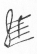
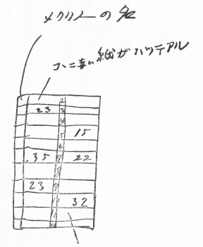

| 日記 14 一九二八年（昭和三年） | |
| 宮本 百合子 | |
| (2016) | |
日記
一九二八年（昭和三年）
宮本百合子
（日曜）
昨夜三時すぎに眠った故、起きるの辛く、やっとの思いで床を出た。朝日が出て、元旦らし。
橇にのってゆく。大使館のお祝へ。
モヤ、お雑煮がたのしみ故、どうしても行くと云って頑張り、且つ、起きぬけに餅をやく臭いがすると云ってさわいだ。大使館、大使、後藤新平一行その他、女の人達五六人居たが、外交官として随分質がわるく、けちに見えた。かえり、花を買う、シクラメン白（ニキーチナ夫人に）赤、自分達のために。ニキーチナ夫人のところで、「オクチャーブリ」［＃十月革命］
の作者ヤコブレフ（プロレタリアート作家）に会う。かえったら、子供のための劇場、今日の約束の由、おどろいて行ったがおそく、途中でストローバヤ〔食堂〕により、スタニスラフスキー・スタディオに、オネェーギンを見る。
〔欄外に〕
スタニスラフスキーのオペラは、芝居とオペラとの調和が狙いどころの由、群集をリズム（音楽）に合わせて動かし、イタリーの無駄な遊びを整理しようとして居るところ、セッティングを、四本のコラムをどこまでも利用して居るところ、面白かった。試みを理解する愉快。完成の愉快ではなかった。
（月曜）
モヤ、先に下へ降り、自分あとから行くと、（食堂）「君のために問題が起ってるのさ」何かと思えば、ニキーチナ夫人のところで、私が日本文学について話ししたいと云った。それを、生意気だと、ＡとＮと二人で云った由。腹が立ち、彼等が作家のクラブであるスボートニク〔土曜集会〕を背景にしてのみニキーチナに対し個人的に自由に話したり喋ったり出来ないけちな心持で憤慨した。Ａ氏、淡泊のようで淡泊でなし。私が彼のとなりにあって、のびのびやってゆくこと感情的に不快なのなり。世渡りを考えて行動するところをむ出し
、いやになった。三流的人物の規模なり。レットヒム、do! whatever he wants to do. 生存難が彼をしからしむるなり。然し、その位の見当の違いを云われて、腹を立てるようでは仕方ないと、Ａ氏の云うのとは別な方面に反省した。自分は、ニキーチナに極めて意企なしにその希望をのべたの故、彼の云うように出すぎたとも態度を反省すべきとも思わず。
〔欄外に〕
モヤ、食糧品を売るコムナール〔国営の食堂兼食料品店〕で、赤葡萄酒を買う。パンも買う。リンゴ。夜、秋田さん達来て、一緒にその葡萄酒をのんだ。
（火曜）
朝、В・О・К・С〔全ソ対外文化連絡協会〕に行き、レーニングラッドゆきのことを話した。可否論相半す。
二時にニキーチナ夫人のところへ行って、それから写真屋へゆき、いろいろの写真をとった。十四日にスボートニックで日本文学の夕をする由。
七時半から、後藤子爵の歓迎を意味する会がВОКС中心で行わる。ルナチャルスキー、カーメネワ夫人、カラハン、前田多門、大使など。後藤、この連中の中に座って居ると、一番単純に見えた。お座なり的の演説があってから、コンサート。
ゲラシモフ（プロレタリアートの詩人）ニキーチナ夫人のところで会う。この人もヤコブレフも、大きな、切り出した岩石のようで、同時に暖いところがあって、まことに心持よい人達だ。所謂日本のプロレタリアートの作家のように貧弱な肩ばかりいやにそびやかして居ず。
（水曜）
麗らかな朝。この頃モスコーには、チェホフの所謂冬が居座り、毎日よい天気だ。
部屋で食事をした。チーズ、茶。
勉強していると、ガウズネル、秋田さん鳴海氏と来。いろいろ話しをし愉快であった。彼には、日本座敷の簡潔な美を理解する力があるらしい。
四時すぎに去る。丁度夕陽が赤く、美しい硝子の氷のとけたところから見えた。
М・Х・А・Т〔モスクワ芸術座〕にドネェ・トロビーニフ［＃トゥルビン家のありし日］
の切符を買いに行ったが売り切れ。十日のを買ってかえった。
後、二人で出かけ、昨夕食事した家で食事をし、モストルグ［＃モスクワの官営売店］
で、ウージン〔夕食〕の仕度をしてかえった。夜、モヤ私のために、ベラ・イムベルのエボージボートヌイを読んでくれ、ニキーチナ夫人の本から、ヤコブレフ、ゲラシモフの伝を読んでくれた。ゲラシモフは全生活を革命的生活にすごして来たが、ヤコブレフは農民出のインテリゲンチャで苦しみがあるらしい。
〔欄外に〕
夜、寒さきびし。月が美しい高いところにのぼって、モスクワ市を見下して見たかった。
（木曜）寒
十二時半までに子供のための劇場へでかける。橇にのって、大急ぎ、大急ぎ。
非常に愉快で、日本にこのような劇場のないことが残念であった。キノアルス、二十五日に見た「二日」をまだやって居る。十日以上。受けると見える。
夜メーエルホリドに、リチ・キタイ［＃吼えろ、支那］
を見る。これは只見るようというので、台本を買ったところ、タイプライティングのものだのに三留何哥
か。
リチ・キタイ、芸術的だとは云い難いが、人の心に迫って或クレイムをするところ――プロパガンダとして成功して居た。自分でさえ苦しいいやな心持になった。英国人は英国人らしいアクセントでロシア語を云い、アメリカ人はアメリカ人らしく、支那人は支那人らしく。所謂写実とはなれかけて居る。メイエルホリドの型が、カブキの型のようにある。（漠然とだが）或誇張、省略。
〔欄外に〕
笑子かえって来た由。
我々のカレンダーは絵入りで、四日にはレーニンが学んだというカザン大学が描いてある。レーニンの、「共産主義者、それは海の澪だ。民衆の海に於ける水滴だ。その場合に於てのみ、彼等は民衆を自己の途に導くことが出来る。若しも宇宙的、歴史的方向のセンスに於て、正しい途を確定するならば」（訳がちょっとあやしい）という風な文句が書いてある。演説の一ならん。レーニンは、然し、自分のロシア語の力で大体見当のつくほどやさしい平易な語を使用したらしい。
（金曜）
自分一人でボックスへ行った。今日は暖く、雪が柔かで疲れること一通りでなし。Ｙのための教師結局どうなったのか分らず。
○かえりに大使館へ廻り、あみのさんよりハガキ、秋田氏への手紙。ニキーチナ夫人の店へよって、ゲラシモフの詩集 1924 出版と、ノビコフ・プリボーイの短篇集を買った。
○夜七時よりボズネシェンスキーを訪ね、ブハーリンの父という人と二人で、狭い、ひどい部屋に暮している。陳淑型という夫人。支那の女の人に会って珍しく愉快であった。支那の女特有の、日本に対する狭い反感を現わさないし、学問があるから。ボズネシェンスキー会があると云って中座した。十時すぎかえる。秋田さん達、四階に越して来た。レーニングラッドのВОКСの人来、おそくまで喋る。ベロ・ロシア〔白ロシア〕の人、愉快で、日本ビイキで、good-hearted なり。
（土曜）
朝十二時頃よりクレムリンの中の歴史博物館へ行ったが、ブブノワ女史の紹介して呉れた人居ず。そのままクレムリンをずっと見ながら抜けて、モスクワ河を彼方岸へ出て、エハガキにあるような位置から、クレムリンを眺めた。実によし。クレムリンの持って居る色彩。――岱赭
色、古びた緑金色。ちょっとはなれて右手にあるボリス・ゴドノフの寺院のビザンチンのドーム――皆日本人がいつからか知って居る色だ。その色が、マテリアルの重みを加えて、古び、かっちりと建っているから何か日本人の胸に迫る美、懐しさがあるのが面白い。
○ロシアが東洋である点。全然知らぬ新らしき美の発見のよろこびより、どこかで知っているものの完全なデスプレーのうれしさ。
かえりに、コムナールの近くの菜食食堂でたべ、美味かった。
○今日はモヤの誕生日にして、自分コムナールで、カビヤ、オッカ、鶏、カウカーズ〔コーカサス〕の店でスリッパなど買い、散々クレムリンを歩いた揚句だからクタクタになって部屋へ戻った。
〔欄外に〕
○食堂
。菜食者のための第一、第二といくつもある。
○笑子の稽古
○来た人、秋田、鳴海、レーニングラットのВОКСの人、黒田氏、皆二時頃まで居た。
赤ブドー酒、オトカ、キューリ、カプースタ〔キャベツ〕、鶏、腸詰、クルミ、干アンズ、サモワール
○ニキーチナ夫人のスボート［＃土曜集会］
では二十一日に話すことになった。
（日曜）
青い鳥（芸術座）、十二時の始りを知らず、半すぎて行ったので、一幕見落し惜しいことをした。チルチルをしたのは女優らしいが、うまく男の子の動作を研究して居て上手であった。犬、猫、ともに上手。最後の幕に、母に起され、おやと目をさまし、母をみつけ（オオママ！）と母にすがってよろこぶところなど実によく、こんなのは迚もメイエルホリドにない味だ。はっきり、然し、チルチルミチル、二人の夢として扱って居るところ、現代のロシアらしくて又面白い。
真直かえり、眠った。眠い、眠い。この頃十二時にねむることないから眠い。夜ドミトロフカ（Дмитровка）〔街路の名、現在のプーシキン通り〕の角のストローヷヤでたべ、かえりに大道商人から、リンゴ、オレンジを買って来た。リンゴ一つ二十五銭というのを二十銭にさせ、オレンジ三十銭というのを二十五哥にさせ、それがいいのだから、自分のように云われた価しか払わぬ人間には思いがけぬ。
（水曜）暖
Ｙ、朝起きず。自分一人でВОКСにゆき、部屋を見にゆく。新らしい家で、前に森があり、しっとりした家だ。家族、母、小さい娘。自分一人では言葉がよく通じないから、すべてのディテールは明日ということにして、コムナールで、キュリ、パン、イクラを買ってかえる。Ｙ、不機嫌なり。ピリニャークが私にフザケ、私、それをＹが怒ったときНичего
〔たいしたことない〕と云ったと云って。根本的に見て、何でもないことは、何でもないにＹするだけの度量なく、五月蠅云って、手をあげ、私の頭を打った。気が遠くなるようになって、床の上に倒れ、はきたくなって泡をふいた。ピリニャークの私に示す感情も歪んで居るし、Ｙの私に示す感情も歪んで居る。本ものではない。変な人生。憂鬱であった。憂鬱だ。自分のこの頃の心持、モスクワにあるもの、人々との話に心が向って居るときは晴れやかだが、自分達二人の間に心が向くと何だか滅入る。楽しくない。
（木曜）暖
部屋を見に十二時頃ゆくつもりのところ眠りすぎて出かけられず。電話をかけたら明日来いとのこと。それでも出かけ、女の人に会ったが忙しくて駄目。下で一寸話し、ずっとブルバール〔並木道〕を歩いてプーシュキン広場に出た。Ｙの眼鏡をとり、いつもの家で食事をし、八時頃かえる。
桜木春江来。光子という友達と。春江さん笑子より少しプロファウンドな性格だ。「十六夜日記」を翻訳して居る由。十時すぎかえる。入浴。
夜、林町と、山本実彦とに手紙をかく。本を送って貰うことについてなり。
（金曜）暖
今日も暖く往来すべって歩き難いこと夥し。ВОКСへ行く。Ｎ、部屋のこと、二百留は一人についてのことだからと云う。それでは困るから、いくらで置いて貰えるのか。それを聞くが判らず。明日にするとのこと。このようなことになると、何かはっきりせず愉快にあらず。
サボイによって、手紙をたのむ。後藤さん出発十七日になった由。いろいろ話し、下葉のＳが Petty な根性で苦情ばかり云って居るのに、七十二歳？ かの老人はなかなかよく、ロシアを理解して居る。その点心持よく、一寸感服した。かえりに、本やによる。夜八時、モヤ、床に入って居る。自分珍しく、一人で机の前に向ってこの日記を書いて居た。ところへ、急に寺の鐘が鳴った。始め、クレムリの［＃「クレムリの」はママ］
時計かと思ったらそうでなかった。考えると今夜は金曜日で、正教では何とか云う日に当るのであろう。
〔欄外に〕
晴れた空から日光がふりそそぎ美しい、輝いた町の風景であった。
○自分この頃二人でいつも一つ部屋に暮して居る苦痛をひどく感じ、どこでもよい一人の部屋に、自分の机というものを持ってものを落付き書きたい。
○ロシア人二人で一つの部屋に居て平気らしい。それがつまり東洋人と西洋人との差か？
（土曜）
Ｙと二人、ボックスへゆく。今日はノボさんも居て、部屋の話を始めたが、マーゼル二百円位と云ったと云ったら、それは一人のことだろうという。二人で 400 出すのなら何もセミヤー〔一般家庭の貸部屋〕に入りはせず。いくら出せる、いくら出せる、と私共に聞く。我々、迚も一人二百留
など出せず。大体、室を貸す人間が自分から金高をきめず、いくら出せると聞くのは、我々にとって馴れぬ交渉のしかただ。そんなことを話すときＮ、下卑た表情を浮ぶ。又、何故マーゼルがやめたか知って居ると云って、わざわざ彼が八百留日本大使館へかえす金を使い込んだのが判ったからやめさせた、と云う。「不正直です、そんなのは、云々」然し何故、それを、全然内部の人間でない我々にわざわざ云う必要があるか。彼の重々しき Да!
〔はい〕も余り男らしさの証拠にはならず。
〔欄外に〕
○今日室にスティームなし。
ニキーチナさんのところによった。まだよくないよし、ゲラシモフが出て来た。
（日曜）
昨夜から、変に頭が重く苦しくなり、夜中にＹを起し、はきそうになったりしてさわいだ。
何か、今朝もよくなし。Ｙ、ナルミさんをやって、サボイの後藤さん一行のドクトルを迎えにやってくれる。ドクトル来、心臓が弱って居る由。グリップ〔流感〕だろうと云って薬をくれる。
食欲なく苦し。
（月曜）
ドクトル来
（火曜）
何になりそく
ねたのらしい
ドクトル曰く
「猩紅熱でもなかったらしいね」
関根君
「この前も外国で中條さんグリップをしたことがある」
と誰かに話して居た由
（水曜）
ドクトル来
関根さんと一緒なり
（木曜）
ドクトル来
（金曜）
ドクトル来。
カチグリこと佐藤氏来。
白飴の大きなカンを佐藤氏、ナルミさんにことづけてくれた。
（土曜）
今日、後藤さんの一行モスクワ発。
Ｙ、朝出かけ、ドクトルに上げるクッションを買って来てくれる。なかなかよろし。
今日は、もう来られまいと思って居たのにドクトル来。
今日はひどいモローズ〔厳寒〕の由。秋田さん達二人ステーションまで行って、髭にかかる息が凍って居た由。
Вознесенский
スケートで腕を折ったとて吊って居た由。
スケートでは大人、よく怪我するな。
〔欄外に〕
レーニン記念日なり。どんなことがあったのか、床に居ては一向分らず。
（木曜）寒
○今日からロシア語の先生イフゲーニア・ミハイローヴナ来る。
○網野さんに手紙を書いた。
○大きな嚔
を、午前０時半にした。
○アンネットとシルヴィのつづき「母と子」とを読む。
○食欲普通になり始めた。然し、おナカじき一杯になる。
（金曜）
きのう、稽古をしたのが大分こたえたと見えて工合わるし。ひどい顔の色、閉口して一日床に居た。
余り本をよまず、寧ろよまされぬ。
（土曜）
エフゲーニア・ミハイロヴナの稽古、Ｙ一人。自分聞いているだけもうんざり。
今朝、辛いのを堪え、起き、Ｙに助けられ、すっかり身仕度をして、橇にのり、アレクサンドロフスキー・サード〔アレクサンドロフスキー公園〕へ出かけた。久しぶりで戸外の空気をかいで、いい心持！
ロシアの冬は、戸外散歩をよくしないと、一年居るうちに、すっかり白髪になってしまいそうだ。室内の空気が、それ程わるい。こちらの人、よく「新鮮な空気を吸いに出る」と、全くいうわけなり。自分皮膚が凋み、額など小皺が出た。
（月曜）
○赤髭の、気のよい、甲斐性なきトッチャンらしいカリドール〔正しくはカリドールヌイ、ホテルなどの廊下にいる給仕〕、自分郊外に住んで居て大きな家があるから夏来いと云う。そんな話して居たら、Ｙも出て来、こんどは働いて居る女、自分のところに一つ部屋があるから、隣人のところにもう一つ部屋があったら来いと云う。二つで 100 руб〔百ルーブル〕という。
○ラリス・レイスネルの論文を、Ｙ読み、自分書きつけ。レイスネルの頭のよさよく判る。革命のファウンデーションワーカーの苦痛多き生活、消耗を、公平に認めて居るところ感心した。彼女の作品は、美文的価値によらず、この確な判断力によって価値つけられて居る。
○桜木さん来。日本のキモノを裁つ。自分も下手。
〔欄外に〕
○ロシア語の稽古、今日はイフゲーニア・ミハイロヴナ脚が痛いという。Ｙのケイコなって居ず、Ｙ、いやがる、いやがる。十留持って行った。
自分この頃いろいろモスクワの生活を見て思う。なまじっかのインテリゲンチャの古手の家になど入るより、清潔でさえあれば斯ういう働き人の生活に入って見たいと。その方ずっとよろし。
（火曜）小雪
Ｙ九時頃独り起き、一人食事す。私が起きた時、出かけ、本やに行く。Азбука Коммунизма,
Бухарин〔ブハーリン著『共産主義のＡＢＣ』〕、教科書の第二巻を買って来た。Ｙ、『アーズブカ』の始めを読んで呉れた。やさしく書いてあり、或分らない単語を教えて貰えば自分にさえ分る。又、声を出してよみ易く書いてある。ブハーリンのすべての本は、なかなか明快な文章でよろし。
夜まで、桜木さんの為に「十六夜日記」をよみ始めたついでに「竹取物語」をよむ。なかなかよく、かぐや姫の美しさ、鷹揚さ、爺の愛。天上する少し前のところなど一寸ほろりとした。Ｙもよみつつそうなり、それを笑い乍ら、二人で又変になった。阿仏尼余りこのもしき女に非ず。和歌凡庸なり。記録としても大したものなし。肝心の鎌倉へ行ってからのこと一向つまらない。
〔欄外に〕
桜木さんに、今流行って居る小歌。
子供を遊ばせるための、カイグリカイグリのようなもの、習った。
一人で、クラースナヤ・プロスチャージ〔赤い広場〕、アレキサンドロフスキー・サードを散歩した。
（水曜）
アレクサンドロフスキー・サードを散歩す。ここ、クレムリンへ入る陸橋をとおして、ずっと下り坂になった彼方の展望よろし、
雪、黒い立木、スキーをする男の子、スレッジをする小さい子、犬をつれた女、
きのう一人で散歩したとき居た男が、やはりトウェルスカヤ〔街路名、現在のゴーリキー通り〕の先のところで、松の枝を売って居た。
入浴。
〔欄外に〕
○午後からスティーム室に来ず。北側に居る秋田さん、凋びたレモンのようになって懐炉を腰に入れた。
（木曜）寒
昨夜、Ｙフロ場で眼鏡をケースごと落したら、ガラスがはずれた。今朝二人で出かけ、或小さい時計屋へ入って、Ｙの時計のごみをとらせ、そのガラス修繕さす。トンドントンと下りる、半地下室。左がごみごみした時計屋、中央が洋傘のはりかえや、右が、タイプライター修繕、一軒の家で、三つの店がはってあり、修繕パラソルのところには女が居て日本で数年前流行
った、ひどく柄の長いパラソル、而も紫のが立ててあった。その男、猶太人。ゴスイズ〔国立図書出版所
の略〕で、ブハーリンの唯物史観を買う。いかにもロシア的チェスがあった。
○イフゲーニア・ミハイロブナ、Ｙ、いやがって、いやがって閉口、双方がいやなのだろう。稽古がすんで後愉快であったためしなし。Ｙのいう程きらわずともいいと思う。
〔欄外に〕
○大道のリンゴや「もう二度見た」と云う、きのう（一昨日その前日）Ｙ、価をきいただけでかわなかったから。
小さい男片腕なし
今日はＹ、リンゴ２、マンダリン〔みかん〕三つを買った。
（金曜）モローズ
夜七時から、深い霧がかかった。始め煙が一杯になって居るのかと思った位。
秋田、鳴海、我等四人で「シャシュリーク」〔串焼羊肉を食べさせる店〕にゆき、かえり、ホテルの入口で、鳴海君一人「少しブラツイテ来ヨーカナ」と云って、外に止った。彼の心持よく分る。「霧のモスクワ」を歩いて見たかったのだ。
（土曜）ひどいモローズ。
イフゲーニア・ミハイロブナの稽古。
○モスクワ夕刊新聞を見たら、一九二六年以来の昨夕は霧であったと出て居る。一九二六年のときは電車が止ってしまった。昨夜は、霧の降りた場所がまちまちであった為、電車は止らなかった由。この霧の後二三日して天候が変る由。
〔欄外に〕
桜の園の切符を買う。
（日曜）モローズ
中島さん、網野さん、関さん、軽部さんへ手紙ハガキを書いた。
八時頃光子さん来る、幽霊や狐狗狸の話をした。
○灯をくらくしてしまったとき、秋田さんが来てニキーチナさんが大変わるく、七分通り駄目だという。自分達驚き、体がつめたくなるようであった。心臓が悪い由、いつ心臓マヒを起すか分らないという。
夜眠れず。
（月曜）モローズ
○Ｙと二人、ニキーチナさんの家に行く。お母さんが出て来て、入れという。さては何事かあったのかと思ってぞっとした。書斎へ入って見ると、ソファーの上にニキーチナさん、半身起き上って居る。自分達安心したし、うれしかった！ そんなにして居ていいのかと不安で、十分ばかりでかえった。この間撮った写真をくれた。三枚。
○ベゲテリアン〔菜食食堂〕本部へよって食事をしてから、橇で、大きい方のコムナールへゆき、水瓜、梨、リンゴ、オレンジ、ブドー等いいのを買い、又それをもって、ニキーチナさんのところへ届けた。
○自分達ニキーチナさんを愛して居る。彼女はミーラヤ〔かわいい〕だ。どうぞよくなってくれるように。
〔欄外に〕
○ゲラシモフが居た。
○ニキーチナさん白い綿レースのナイトキャップに緑色のリボンの下ったのをかぶり短いジャケットを着て居た。電話が鳴る。用談をする。いつもの書斎に寝て居る――ロシアらしいと思った。
今日よりエフゲーニア・ミハイロブナ毎日稽古。
（水曜）モローズ
夜、痒いので目がさめた。壁について居る左の肱のところ、終に二つ三つ食われ、痒くやり切れぬ。
暗い中を手さぐりでアムモニアをつけて又眠った。
○例によってベゲテリアン。ソバのカーシャ〔おかゆ〕の美味さよ‼
○今日、Ｙ、ロシア語の教師と口論に近いことをした由。Е・М、発音をやかましく云うのはよけれど、何か喋ろうとするのに一言一言なおされるはＹのような人、口が利けなくなる道理なり。
○桜木さん、光子さん来る。シャシュリークから二人でかえって家の角を曲ったら、光子さんが杖をついて歩いて居る後姿が目に止った。笑子さん、春江さんに電話は掛けなかったらしい。却ってよし。十二時前かえる。桜木さん支那の哲学をやるために、火水土、支那語の稽古して居る由。すっかりつかれ、十六夜日記どころの騒に非ず。いろいろ悪口の話が出たが、Ｙが、「この間、私は道を歩いて居て、悪口を云われました。ホージャ〔中国人に対する侮蔑的な呼び名〕と云われました」桜、「何故！ それ悪口でありませんでしょう」Ｙ「いいえ、悪口です」桜「そうですか......私知りませんでした」それから、もう誰も悪口のことに興がらず、自然その話は消え、他の話題がとり出された。
（金曜）
暖く、曇り日。部屋の窓から見渡す景色。曇った空、煤けたコンクリートと煉瓦の建物の背中。襁褓
と古びた赤い干しものが、鈍い天候の下で絵画的効果を有すると同じ、一種の美がここにもある。
雪がすっかり消え、昔勧コー場だったひろいガラス屋根が目の下に現れた。我々は始め温室かと思った。無住の場所だ。ガラスがこわれたまんまになって居る。左の一棟のガラスは殆ど皆ない。骸骨のような枠だけ見える。凄じい感じだし、このガラスの夥しい斜面に反射するモスクワの夏を想像した。
時々、柔かい雪降る。
〔欄外に〕
○大使館へ行って、沢山林町からのハガキを受取った。
○Ｙ、大学聴講のことをＮさんにたのむ。
○歴史博物館へ行った。シチェプキナさんに会うことが出来、ブブノワさんからの土産を渡し、やっと安心した。
（土曜）
やや暖し。
稽古の間、自分手摺りから下を覗いた。
ラボーチャ・モスクワ〔『労働モスクワ』紙〕を買ったところ、自分にもこれなら分るところあり、大いにうれしかった。
○エフゲーニア・ミハイロブナの稽古。来週から又一日置きの稽古にすると云ったところ、Ｙが居ないとき、自分に「何故そうしたのか、どうかかくさず云って下さい。アットクロベンノ〔かくさず率直に〕という言葉知って居るでしょう」「ああ。今よんだばかりだから」自分笑って、理由を云った。あとで、かえり際、Ｙに向って、彼女又同じ質問をす、自分傍に居るのに。味のないギスギスした女なり。
○夜、上張りに着かえたところへ、ノックして、女の人が入って来た。秋田さんの部屋はどこかという。多分、名刺に自分の写真をつけて居る女の人らし（エスペラントを話す電信局に働いて居る女、紫っぽい帽子から、黒いベールを下げて居る。唇を赤くして居る。しわがれた声、秋田さんのことを「オン、ウームヌイ」〔彼はかしこい〕と云った。）
〔欄外に〕
Ｙの眼鏡、出来たが、かけると心持わるい由、ロシアでは、インク、メガネ、スイトリ紙、写真の道具、化粧品までわるし。
○女の郵便配達夫八時間で七十五円、Ｙ、今日は厭露病になった。ベコ！ 少しきいて！ と書いて居る上張りの袖を引っぱった。よしよしきいて上げましょう。
土曜日の鐘が鳴る。八時半
（日曜）暖
よい日向なり。Ｙの風邪気、幸何ごともなし。床の中のフスタワイチェ、フスタワイチェ〔起きなさい、起きなさい〕繰返して居るのを、自分本気で云って居るかと思って目をさました。命令法の練習であったとは情けなし。
起きぬけから、ケンカをし、自分泣き、Ｙも涙をこぼした。Ｙ、自分がＹとの生活に倦怠を感じて居ると思って居る。ずっと思って居る。それ故、自分の一寸した憎まれ口がひどく気にさわり、彼女の愛ではない、何かにさわり、直ぐそうさわること自分に反射して不快になる。――そういう心理的原因だ。Ｙのその気持、自分に責任なしとは云えない。倦怠はして居ない。然し落付かない。馴れないで落付かないのではなく――二人夜も昼も出るも入るも一緒なのや、彼女を知りすぎてしまった点や何かで――フレッシュでなく、彼女の顔を見て自分の内に新鮮なもの生ぜず、自分それを感じ、Ｙそれを感じる。
〔欄外に〕
泣いた顔を洗ってベゲテリアン食堂へ行き、宿へ一寸かえってから、クレムリンの方へＹずんずんゆく。アレキサンドロフスキーかと思ったら電車にのった。ずんずん又行く、降りるとゾーパルク〔動物園〕と書いてある。
「おや、動物園じゃあないの」
「ここへ来たのさ」
自分よろこぶ。白熊、ラクダや驢馬の橇、オーケストラ吹奏楽器□□
人間、悪くなると、心のゆるむことの早いのを感じ自分悲しみを感じた。Ｙ、私がすれた
と云った。すれたか？ どのような点で？
（火曜）
エフゲーニア・ミハイロブナの稽古
（水曜）
今日から、Ｙ稽古に毎朝十一時から通うことになった。一時半に、ベゲテリアンで落ち合うことにした。それまで、自分自由時間なり。
まことにうれし。そろそろ書きたいことつもって居る故、本当にうれしい。
アンナ・ミハイロブナとは比較にならず落付いていい先生の由。マダム・キリロフスキー
（木曜）
エフゲーニア・ミハイロブナの稽古
Ｙ、キリロフスキーのところへ行ってから、又ミハイロブナ故、くたびれて閉口して居る。
（土曜）
エフゲーニア・ミハイロブナの稽古
（日曜）
第一大学の日曜大学の講義をききにゆく。ドストイェフスキーと十九世紀の文学運動。自分、いろいろの名詞がちょいちょいわかるだけで、つまり、教授の顔を見に行ったと同然なり。
寒い。寒い風が吹く。
シチェプキナさんのところへゆく。親類のもの多勢集って居て賑やかであった。叔母さんという太った、ふざけや。かえりに永原さんのところへ廻ったら留守。アルバート〔骨董品、古本屋の多い広場と街路の名〕のソブキノ〔ソビエト映画社〕を見た。巴里の靴屋、面白し。
（月曜）
きのう、いろいろ仕すぎで、Ｙ今日は疲れて居る。自分も少し。
今日エフゲーニア・ミハイロブナのところへゆく筈であったが、やめにして、家でけいこをして貰った。
今日脂油週間の始りの由にて、ブリーヌイ〔うすいパン〕をたべた。甘くないハットケークのようなものであった。
（火曜）
Ｙ、稽古、自分書きもの。
一時半にベゲテリアンへ行ったが、なかなか来ず一時間近く待ってやっと来た。
キリロフスカヤ、今日は日曜に夫婦でころんだ顔が痛むと云って落付かなかったそうだ。
Ｙ、この頃なかなか書くようになった。が、但し、ロシア語作文なり。日本語ではちっとも書かず、ロシア語をかく。可笑しいが、日本へかえって、此も書かなくなったら元のモクアミ？
夜、笑子、Ａ、Ｎ、と或建築家のところへ行った。名を知らぬ画家、ゴスイズダートの人、民謡をうたう人、ブラウデの講演会のときピアノを弾いた人、その他、十二時すぎまで居て、随分愉快であった。
このアーキテクト〔建築家〕、一九〇五年のクラブ（マラジョージ〔青年の意〕）を創って五年牢に入れられた（夫婦とも）、革命のとき、六年外国に暮して居てモスクワへか
って来た。いろいろのコレクションうんとあり、妻君は日本で踊のケイコをしたことがあり、そのとき見せて貰った写真帖に、橘いさ子の兄妹が夫妻を招いた写真があった。
Ｙ、案外に驚いたらしく見えた。
（水曜）モローズ
鞣の手套を（Ｙに御誕生日に貰った）はめて居ると手がかじかんで覚えがなくなる。まして自分のカフスが短いからつめたいことお話にならず。
朝仕事をしてから、ベゲテリアンへゆき、それからエフゲーニア・ミハイロブナのところへ出かける。
モスクワで、一人、知らぬところへゆく始めてなり。何しろ、電車の窓がすっかり凍ってしまって居るから、どこがどこか分からず、かえりは混むし、気を揉んでくたびれた。
ツルゲーネフの「初恋」を読み始めた。彼女、家に居てもやっぱりがたがたと落付かず、又落つく椅子や机がないのだが。
（金曜）
今日からビクトーリア・ゲンリホヴナの稽古始る。今までとは違っていい心持。
Ｙ、赤いチューリップの花を買って来た。
美しい。二本あって、互に頭をよせ合い、葉は、腕を腰に当てて居るような形に巻いて居る。二人の若い女が、腕を組んで笑って居るようなり。
（金曜）
今日は、ビクトーリア・ゲンリホブナと家を見に行く。始めペトロフカの角、美顔術師、家が変に湯気があるようで、白粉くさいみたいで駄目。それから、ニキートスキエ・ボロータ〔ゲルツェン通りの端の地名〕の近くで、アンナ・サモロブナのところを見た。平家で、さっぱりして居て、なかなかいい。こぎれいで、もうきめてもよい位に思った。が、まだ見ようというので、アルバートにゆく。うんと歩いて、歩いて、足の平がいたい位あるいた。が、二つともここは駄目。沢山ある。いいのがない。外につとめに出るのなら何でもよいが、家に居るのでこまる。へとへとになってかえって、御馳走になり、直き家へかえって二人ともねてしまった。
（日曜）
ガウズネルと、六時頃ベラ・イムベルの家へ行く。あいにく父病気、彼女いそがしい。然し、心持わるくない人だ。すっきりしたところあり、作品の感じがあって面白い。
フランス風な色彩だ。
ジェリンスキーが居て、いろいろ話し、秋、アメリカへ行きたいという話。アメリカに彼が興味をもつのは、アメリカが、カウボーイの時代から、金を儲けた時代を経て、今、新しいインテリゲンチャをつくりつつある、その明るさ、活動的さ、人生にプラクティカルにぶつかって行くテクニック、そういうものに興味があるらしい。これは、自分面白く感じた。モスクワに於けるアメリカニゼーション。Н・Л、ベラ・イムベルの夫という活動に関係して居る男は、ホームスパンのような服に、半ズボンという服装で、これはロシアの男の間のアメリカスタイル好みの標本だ。
〔欄外に〕
午前中二人で、死人街にクワルティーラを見に行ったら、そこにはなくて多分コムミシォネール〔ブローカー〕であったらしい。
それからアンナ・サモイロブナのところへ行ったら、しまっていた。
大使館へ手紙をとりに行ったら同様
セメントの切符を買った。
（月曜）
この頃、日本で云えば寒の終り。モローズの最後で、寒し。つめたい風が吹く。今日は、皇帝を一九一七年に廃した記念日として、すべての官公立・私立がやすみで、街路は、ふだんの働き人で一杯だ。
朝、これまで書いたものを少しよみかえして、手入れすべきところを心づいた。やはり、ただ日記のようにずるずる書いては面白くない。もっと圧さくする必要あり。きのう、ガウズネルにきいたフィリッポフの店で食事す。二人位が丁度よい小テーブルが沢山並んで居て、食物やはり美味し。普通のストローバヤでこしらえないものがあった。こちらの女の人随分ナイフでたべる。而も気どりながら。
稽古、三時すぎから六時すぎまで。アホートニキ〔現在のカール・マルクス通り〕からいそぎかえって来たら、誰かが「マロデェツ！」〔でかした〕と叫ぶ。見たら、鳴海さんであった。
（木曜）
日本から、Ｙの訳したチェホフ書簡集が届いた。
（金曜）
感想を書き始む
リアリスティチェスキーへツェメントを見に行った。
（土曜）
ロシア語の稽古、
ひどい雪解けが始った。
今日天気がいいので、ガローシなしで□
ったところが、足がしめってやり切れず。
（日曜）
光子来、ノボミルスキーさんからもらった切符で、ルイコフの名に置けるクルブへ行く。テアトラリヌイ〔街路名〕だと云うのになくて、どこか遠いところへ行った。すっかり労働者のクラブで、ロシア語で話した。彼等は単純だ。自由な、いい心を持って居る。大変愉快であった。
（月曜）
今日、引こすというクワルティーラを見に行った。やす普しんだが、人間の心持がいいからきっとよかろう。部屋ひろくない。然しあかるいし、さっぱりして居るし、いいと思う。
錠がこわれて、開かない。椅子をＹがかりてその上に立たせて、私に部屋をのぞかせた。百二十五留だ。
夜、ガウズネルが来た。話す。いつもゆっくり話す。十二時近くなった。
（火曜）
ジョン・リードの、「世界を震駭させた十日間」をよみ始む。まだまだむずかしい。自分の力にあまる。然し面白いことは面白し。いろいろ感ず。
ケレンスキー一派が何故失墜したか、原因の心理的なものがイディオロギーの他にあることを感ず。勿論彼等がインテリゲンチャ、ブルジョア的であったのが、第一原因だが、その原因によって、結果的にあらわれたのは、一時政府の優柔不断だ。彼等は柔かった。絶えず揺れて居た。ボルシェビキが革命を成功させ得たのは、イディオロギーと、彼等の堅さにあった。この堅さの必要がどこから生ずるかというと、民族性から。――民族性に、日本のような揚げ蓋がないから。日本のアゲ蓋の一つを人情と云い、一を常識という。
（木曜）
桜の園の印象と、Ｙの翻訳について書いた「シナノイ書店のベンチ」終る。一九枚、文春。
（金曜）
クワルティラ、いよいよすっかりきまった。
和田、アミノ、丹野、苅田、関、林町へ絵ハガキを書いた。
（月曜）
マールイ・テアトルで、スミルノワの引退興行があった。カチャロフ、モスクヴィン、スタニスラフスキー等出演するという。スタニスラフスキーの出るのは珍しいから、切符を買ってあった。ゆく。見物にも女優多し。出しものは、オストロフスキーの、「総ての賢者には充分の質朴単純さ」とか何とか云うゴーゴリの模倣的なもの。作は下らない。が下らないのを、これ等の老大家達がどのように演出するかが見ものなり。スミルノワ、まだ奇麗で、声もすみ、立派であった。スタニスラフスキーは出ず。カチャロフの主人公の青年、巧者すぎて却って感服せず。寧ろ、叔父を演った役者――有名な人だが忘れた――の方がよかった。やはり年よりは若いものをやっても円熟しすぎて居る。幕合に、サモロブナ引退式があって、いろいろの人――ダンチェンコも出てよんだり話したりした。サモロブナも挨拶したが、カッ采鳴り止まず。自分サモロブナが、この拍手も、こうやって見物を見渡すのも、もう此夜ぎりと思って感じる心持ちを感じ、淋しいような同情されるような印象のつよい心持がした。三十年間舞台に居た人が、これぎり舞台と別れる――辛いことだ。
〔欄外に〕
舞台に出た瞬間のキン張した心持は、書くものが原稿紙に向い、紙と心とが平らになったときのあの感じ、あの感じと同じであろう。
（火曜）
この頃は、どこの本やでも、ゴルキー一点張りだ。非常によい写真がある。本もうんとある。
トルストイ祭が今年あるが、ゴルキーを歓迎するようには盛にしまい。トルストイアンは、目下のロシアにとって、あまり有難いものではないのだそうだ。
又そうらしい、例えばＡさんのところへ来る男なども。一種の、ウラナリとなって居る。
（水曜）
ビクトリア・ゲンリホブナの稽古
（木曜）
ビクトリア・ゲンリホブナ病気なり。Ｙけいこしにゆくことが出来ない。
（金曜）
今日、クワルティーラの用事出来引越しをする。四時頃のつもりのところ、買いものをしたり何かして六時頃になった。
往来で猫柳を売って居た。一束五銭。いかにも早春の感、自分吸いつけられる心を感じ二束買った。
借室
の初めての夜卓子にある猫柳の枝。
このコオペラティーブ〔協同組合住宅〕、基礎工事がわるいと見えてディヷン〔長椅子〕に寝て居る頭に電車のドドンドンが響いてやり切れず。
〔欄外に〕
Ｙ、南京虫を二匹つかまえ殺し紙の上に並べた。
（土曜）
ニキーチナさんがなおってはじめてのスボート〔土曜集会〕であった。
ゴルキーの夕べ。
ベゲテリアンからかえりに廻ったら、彼女久しぶりに起きて、テーブルで、夜のためのキリ貼りの最中であった。少し手伝ってかえる。Ｙ、胃の工合がわるいと云ったり、昨夜眠らなかったりでキゲンわるく、一時間おくれてスボートに行った。女の人も数人来て居たが余りいい心持の人居ず、ニキーチナさんだけ可愛くたっぷりしてよかった。
大使館で手紙をとったら、思いがけず、大瀧叔母の死、片上伸氏の死を知る。おどろいた。いずれも思いがけぬ人々。そしていずれも僅か病んで死んで居る。大瀧の叔母上は肺炎、片上さんは脳の障害。
〔欄外に〕
『婦人公論』を送ってくれた。うれしかったが、中を見てがっかり。こんな雑誌をよむと頭が悪くなる――その程度に記事が散漫だ。その上『女性』そっくり。『女性』つぶれたのではないか、あったらいくら何でもこのように『女性』まるままのことはしまいが。改造から 1000 送って来た。
（日曜）
朝窓から外を見ると、赤い帽子の兵隊、三百人以上長い列になって行った。
コムソモール〔共産主義青年同盟〕が、赤い旗を立て通りすぎた。
大瀧叔父上に手紙をかく。
林町にハガキ、字引をたのんだ。
夜、宿の主人［＃ルイバコフ］
やってきて、パスポートを渡しいろんなことを喋った。
まだ南京虫は居る。Ｙ曰く「大分居るよ、これは」
（月曜）
ビクトリア・ゲンリホブナのところへ行く。ノボミルスキー氏在宅。暫く話し、月謝を渡して来た。
この部屋、なかなかやかましい。それに、やす普請でファウンデーションがわるいと見え、電車の響がつたわるし、トラックなどが来ると、ブルブルする。これはと驚く。然し、この頃は二人とも根性が少し違って来たからやかましい小言は口に出さず。
〔欄外に〕
この家、主人夫婦、妻の妹、二人の子供、女中、親類の子供（娘、小学校第七級）皆仲よく暮して居る。が、小中流人的で、我等悲観なり。然し小さい娘はよい、いろいろ教わる。
（火曜）
朝はお茶、パン、バター、
オビェードはベゲテリアン、夜部屋で冷肉と茶、然し冷肉だけでは飽きて閉口なり。
鳴海さん来、レーニングラッドの口がきまった由、結構、然し彼大してうれしくない。この心持同感される。つまり、彼、モー東洋語学校は迚も駄目とあきらめて、最後に、かえる前に行っておこうというつもりで行った。ところが案外出来てもう三年位居る――急に行手がボーとなったところ面白い。ポズニャクがＹにサムライ в юбке〔スカートをはいたサムライ〕という名をつけ、自分実にうまいと感心する。こんなよい綽名
をつけた人はポズニャクの他になし。
（水曜）
モヤ、夜ビクトリア・ゲンリホブナのところ、ノボさんが稽古をして呉れる由。
（木曜）
自分一人、国立銀行へ行った。直き受けとれた。1334
まる山のお爺さんは親切なり。
ベゲテリアンでＹを待つ、待つ、待つ。
それから、エリセーフ［＃食料品店名］
へよって、ビクトリア・ゲンリホブナの見舞、夢の話をきいた。
夜、妹、いつまでもいつまでも下手なピアノを弾いて居る。Ｙ、腹の虫のカンシャクで、まともな口がきけず。自分、今日の新聞から、ラブコル〔労働通信員の意〕その他を切りぬきをする。妹、十一時頃までやって、こんどはタイプライターを打ち始めた。そのとき、女中は台所でミシンで、自分の前掛を縫って、湯をわかす間自分は、家庭労働者の сo
юз〔団結〕について話す。
〔欄外に〕
クロコディル〔風刺雑誌『わに』〕とスメハチ〔風刺雑誌名〕とを買った。クロコディルの方が面白い。なかなか刺したところを描いて居る。
（金曜）
〔発信〕山本氏へ手紙。加賀美さんへ手紙。
（土曜）
〔発信〕林町へ手紙
（日曜）
〔発信〕山岡へ手紙
モヤ中井さんへ
（土曜）
パスハ〔復活祭〕。
（月曜）
ペルシンファンスのコンサートにゆく。第七交響楽、ヴァイオリンの為のコンチェルト、エグモント、（カチャロフが出る。）第七シンフォニーよかったが、大したことなし。自分は却って、最後のカチャロフのエグモントの科白を音楽とともに誦するのをきいて、西洋の劇と西洋音楽がどの位同じ伝統をもって生きて来たか、悲劇の精神というものが――ヨーロッパの――全然日本の悲劇とは違うことを感じた。この感じは強く自分を動し、シェクスピアの偉大さ、ギリシア悲劇の偉大さなど強く理解した。日本の悲劇が人情を主として居るところ実に他の西洋の悲劇とは違う。カチャロフが本当に大きな役者であること、フランスの悲劇でも何でもやれる大きな役者であることがよく分った。それから、ノボミルスキーの家に橇で出かける。医者夫婦、彼の友達夫婦、我等、秋田さんと鳴海さん。九時前まで居て、ノボさんが少しよって賑やかに喋り愉快であった。
〔欄外に〕
この頃、ひどい道だ。雪が朝起きたら積って居た。
○例えばこの晩でも、ノボミルスキーのところで先ず男の子が唄い出し、皆うたい出し、この皆一緒にうたうというような心持実に日本の家庭の楽しみにかけて居る。
（火曜）
今日も道はぐちゃぐちゃ
モヤどうかして脚が（左）痛く、顔を洗ってきたらびっこを引いて居る。コムプレス〔湿布〕をして自分一人先生にゆく。
今日、自分の最初のロシア語の小説、ミリオンをよみ終った。78
頁の本だ。
（火曜）
ボックスより切符を貰う。メーデー見物のため。九時半より赤き広場で始るというので、自分朝早く目がさめた。生憎天気わるく、小雨、さむい。Ｙ、合外套で出たが、引かえして冬のにきかえて来る。傘をさして待って居た自分、パンを入れたフクサを忘れたのに心づき、大いそぎで引かえす。イズボッシチク［＃辻馬車］
にのってから、Ｙ、キップをあっちの外套に入れて来たのを思い出す等々、さわいで、赤き広場へゆく。なかなかやかましい。切符のないものは家族づれでもかえす。赤き広場ではパレードがあった。自分このようなものを見るの始めてだったから、騎兵や、軽砲車がチャリオットのようにとんでゆく様子を面白く思った。看護婦、軍用犬、大小のタンクまで進行した。それからデモンストラーツィヤ〔デモンストレーション〕、殆どダラケて居る程平和な祭だ。
〔欄外に〕
トリブーナ〔見物席〕のところに五時間立って居た。足、いたい。それでもパッサージから家まで歩いた。
自分いかなるメーデーであるかと想い、一寸暖い心持がした。
すべてのストローヷヤ休み、店やすみ、電車終る、通らず。
（土曜）
秋田さんの出発の夜、Ｙと二人で出かけ。始め、間違えてオクチャーブリスキー〔駅名、現在のレニングラード駅〕へゆき、プラットフォームまで行って訊き、もう一つの方へかけつける。自分どうもちっと変だと思った。その通り別なステーションであった。秋田さん幾分亢奮し、一人故淋しそうなり。メリー、金［＃ロマン・キム］
、ピリニアク、ユダアの作家の妻、ブラウデ等。あとから若いエスペラントの人が来る。一寸寒い夜であった。日のあるときは雨が降った。夜は晴れたが。かえりに鳴海家へ来て、茶をのみ、十二時すぎまで居てかえった。
これから、彼も一人。
秋田さんのつれ、アメリカの商人体の男だ。
〔欄外に〕
ВОКСで、『伸子』沢山と『改造』、一、三、四月号をもらう。Ｙ、『改造』がうれしいと見え、ステーションへゆく電車の中ででもところどころあけて居る。読めはせぬなり。
「Но」不快な男なり。段々よくなる人間と――つき合えばつき合うほども、いやになる男とあり、あとの方だ。
Ｙケイコ休む。
（日曜）
『改造』に、ヨサノアキコの押韻詩がある。テクニックにミソを並べ出したとともに、内容が保守的になって来たのは見ものだ。文学の上にも或時代が来る。旧いもの、新しきものが、フルイ分けられる。ヨサノさんが、このように古いと、彼女の貧乏して居て書いた時分のものをよんで誰が予測しよう！
Ｙ、もうホテルへゆくのはいやらしい。自分もひとつは緊張しすぎていやなところもある。私の仕事がすんだらレーニングラッドへゆく。そして白夜を見る。一人で一つの室をもって、ものを書く、よむ、どんなにうれしいであろう。冬の頃のようにレーニングラッドにゆくの厭でない。正反対だ。
〔欄外に〕
押韻も問題だ。ああ並べてあるとややモノトーンなり。
午後ベゲテリアンのかえりにミツ子さんのところへゆく。寛の「驢馬とその他」驢馬のところだけ、それから後
一首、よろし。あとは首をそろえるため、のばして、のばしてある。よくない。
横光！ カコイ・チェロヴェーク！〔何という人間か〕むしろ彼が大切がる神経さえ存在しない存在だ。
（月曜）
Ｙ、ケイコ
自分、印象のつづき。一週間も放ってあったからむずかしい。
この頃暫く日記を書かなくなった。気持の内面のものが、印象記に出てしまう。外部的には平凡だ。故に日記を書くことがへる。
この頃米をたくことを覚えて、今夜も何もない、さあお米をたく、ごま塩をかけてたべた。
（火曜）
Ｙ、ケイコやすみ。机のこっちに自分、あっちにＹ、間に本をつみ上げて。
こちらへ来てから、自分の心持の変化、いろいろ目に見えず大なり。交友の点でもいろいろ変って来て苦しい。例えば、Ｎ・Ｙ。Ｔ・Ｎ、に対し、自分とても本気に打ちあたってゆけぬ心持がする。特にＮ・Ｙ、自分としては早く手紙を出すべき筈だ。それが書けぬ。どこかに、自分を押し出すものがないかと彼女の印象の内をモサクするが、何もない。行く道は違ったって、人として何か忘られぬところあれば、自分このような心にはなれないであろう。時々拘泥し、いやな心持になる。寧ろ苦しい。Ｎ・Ｔは哲学をやっても人間にうまみがないのがつまらない、燃ゆる魂がない。Ｙ・Ｎ、もそうだ。つまりひややかなのだ。漱石時代のブリュー・ストキング［＃青鞜］
のタイプなり。知識で、自分を片づけて居る。
（水曜）
Ｙケイコ、自分仕事。もう殆ど最後の部分に近づいた。
『プラウダ』、ワルシャワで May Day のとき殺された労働者の写真が出て居る。『イズヴェスチア』にはワルシャワの天国として、ポリツィア〔警察官〕、スード〔裁判官〕その他の天使にとりまかれて、まだ煙の出て居るピストルを持った無頼漢がシャンパンをのんで sofa におさまって居るカツーンが出て居る。
Ｙ、На Дне〔「どん底」〕の特別興行のあるのを見つけて来る、自分ひとりで切符を買いに行って間違え、第二芸術座の使用人入口の中へ入ってしまった。切符やすい。
（木曜）
今日Ｙ、起きぬけからカンシャクを起す。寝不足なり。自分もねぶそくだから腹が立って、怒った。
電話がかかって、Ｙ又パッサージに居ることにした由。60
号。自分達が一番始めてついた夜を過したところなり。
（金曜）
ブロニポエズド〔「装甲列車」〕の日だが、今日はすべての興行物やすみ。〔約十字分の空白〕の葬式なり。
今度は、Ｙもホテルで愉快でないし、自分も愉快でない。
ピアノを弾き出し、腹が立って、手がふるえるようだったのをやっと堪えた。雨が降る。ピアノが音譜を、ねむそうに、くりかえしくりかえし弾く。
（土曜）
雨
仕事やっとすむ。いい心持でない。変に郷愁を感ず。日本が恋しい。日本で、小説を書いて、書いて、腹の中まで書きたい。そういう心持だ。
小説が書きたい。刺戟を欲す。
エキスペリメンタリヌイ〔劇場名〕で、トラビアタ〔歌劇「椿姫」〕をきく。いい心持であった。
ピオネェール［＃少年団員］
にだまされて、金、時計その他とられた。馬鹿らしい話。
（金曜）
ブロニポエズドを見た。МХАТ、こういうものを演じるのにいろいろ旧来の演出法から脱せられず。例えば、第一幕に大尉の生活、感情その他説明する幕があるが、それはまるで、ドニー・トゥルビーニフ〔「トルビン家の日々」〕のときと同じ感じだ。こういう点。説明しないでは、平たく舞台にのせないでは安心出来ないようなところ、自分МХАТにあきたらぬ。
（日曜）
サトコ、リムスキー・コルサコフ。コルサコフの才能は大したものでない、勤勉だと思うが――作曲、研究的で、古い民謡もとり入れ、一寸いいが、オペラとしては下の部だ。テムポがゆるくて、迚も。終りまで居ず出た。
（月曜）
ワフタンゴフ［＃劇場名］
の、プリンセッサ・トランドートを見た。よろしくない、いろいろ考えた。演出技巧というような点について。
〔欄外に〕
Ｙも自分も夏の帽子を買った。
（水曜）
メリー、ヴェラ、ガウズネル来。
メリーさん、自分のような赤いシャクヤクの花をもって来てくれた。
メリーさんたちは一緒になって、さわぐ友達だ。
（木曜）
今日大使館で東京からの手紙を貰った。英男がガス中毒をしようとしたというのをよみ、自分心を打たれた。英男の手紙にはそんなことが一つもメンションしてなかった。一人の友達についてということも今度の手紙で理解された。
苦しき心持、今死んではつまらぬ。然し――彼の心には正しさを慾する熱しかない。そういう風に純一だ。
国男は岡田さんのところへ通うようになったと皆がよろこんで居る。母は自分達のことを老夫婦と云う。苅田さんも弟が病気になったりいろいろで、心が苦しかったらしい。
ハガキに、英男、ここ少しユカイ？ に暮したら悧巧になるか馬鹿になるか、と書いて居る。非常に深い心持だ。それでやってゆけ、それでやってゆけ。
何とかさんという人のところで、花のことを話して居る彼の顔をみて、こんな内面経験をしつつある若者だと誰が思おう。
〔欄外に〕
石橋和訓が死んだ。五十一歳。この石橋のことについて「ゴーゴリの肖像」をＹがよんだとき随分話して居た。イギリスからは音沙汰なき由。
父カン暦の誕生日をした由。
（日曜）
光子さんと動物園にゆく
（月曜）曇
大使館で、午後一時から昼餐、酒匂夫妻、広岡、大使、令嬢。
かえりに事務所によったら誰かがアレクサンドリスキー停車場で五時に会いたい由。ストラスナーヤからタクシーで出かけたら、笹川春雄氏だ。思いがけないこと、実に思いがけず。パリにゆく由。羊羹を貰った。
〔欄外に〕
この項一日ずつ繰り上げる。
今日はガウズネルのところへゆく。
（火曜）曇驟雨
野崎、我々、雀ガ丘へゆく。
夜、永原さんのところですきやき、宮川さん一緒。ハルピンへ出かける由、ロシアの支那に対する政策その他、いろいろきいて面白かった。かえったのは、午前二時、すでにもう明るし。人通りもある。アルバートから歩いてかえった。
○今年の作
がわるいと大分СССР〔ソ連邦〕閉口らしい。
（水曜）曇
かえって来たら大変工合わるく苦しんだ。例の胆囊がはれたのなり。
（木曜）曇
家の妻君子供二人、姉、息子、シューラ［＃ルイバコフの妻］
、ペンザの田舎へ出かけた。ペンザに姉の家がある由。朝から支度をして、ナージャ［＃ルイバコフ家のお手伝い］
台所でカツレツをつくるやら、ゆで卵をつくるやら、急な洗濯の火熨
をかけるやら、九時頃立った。クワルティーラの二つの部屋をかして、出かけたわけなり。モスクヷに白粉がないと云って細君こまって居る。飢饉以来の由。
Ｙも食堂でパンを見たら、白くない。茶色をして居た由。
臥床
（金曜）曇
臥床
Ｙ、永原さんのところへ行く。
（日曜）曇
さむし。トプレニエがないといやな位。今日やっと時々起きる。
〔欄外に〕永原夫妻来。
（月曜）
○エキスペリメンタルに傘を昨夜忘れた。とりに行ったら七時半に来いという。行く。あった。
○午後モストルグへＹが見て置いたというヤーシチク〔箱〕を買いに行ったところが無し。Ｙ、肩をふって歩いてクズネツキー・モスト〔古本屋の多い街路名〕の方でカゴ、アディアロ〔掛蒲団〕を見つけ、待たした из〔辻馬車「イズヴォーシック」〕でかえった。
○永原さんのところへ本箱行李一つあずける。ライスカレーを御馳走になる。
○夜十一時半、レーニングラードへ立つ。今度は三等の寝台だ。さっぱりして居て、二段で、天井の下の棚に荷を置く。皆木。車台は鉄。夜更け、すっかり灯をくらくするし、喋る者はないし、静かで眠れた。乗合、前に、いかにも細そりした方のロシア型娘がのって居た。着物の上から、カポート〔婦人用部屋着〕をかぶって、脚をちぢめて寝て居る。
レーニングラード近くなると、景色がモスクヷ辺と違って来た。
風景に水が多くなる。白夜で、明るい。光なく明るい。草が生えている。どこからとなくそれが沼になって草の間に水が見え、やがて川になる。楊柳が川の中に立って頭を出している。
水つきのように陰気で、或凄さがある。ゴーゴリの小ロシアの小品のようなロシア的神秘あり。
○ステーションにポズニアク、Ｎ迎えに出て居た。
○ドーム・ウチョーヌイフ〔学者の家〕、No. 11 に入る。前にネヷと、ペテロボリラクの城サイが見える。川の水が速く流れて窓に立つと自分の方が動く――汽船にのって居るような気がした。
○レーニングラード、何より静か、静か、静か、生活がスーッと遠のいたようにしずか。三十分ばかり室に居るうちに、モスクヷ恋いを感じた。自分はモスクヷの方がすきだ。何だかレーニングラードは平ったい。王宮があり、町の建物は四五階が並んで居るが、平ったい。人間もモスクヷ人ほど荒ぽくない代り尖鋭でない。女の装は落付いて居るが。
〔欄外に〕
借りれば枕、マトラス〔マットレス〕あり。自分達はそんなことせず、Ｙ毛布を、自分アジェアーロをかぶってねた。
（水曜）
レーニングラードではよく眠る。十二時まで寝った。
ВОКСへ行く。奇麗な室に、若い女が一人タイプライターをうって居る。それは〔三字分空白〕の細君、あと一人。
いろいろのものを見るに都合よき紹介状と、子供芝居の紹介状を貰う。
○ドーム・ウチョーヌイフ、朝から、十二時迄、夕方から夜十二時迄、台所にキピァトーク〔熱湯〕がある。何かこしらえてもよい。重宝だ。白髪のプロフェッサー、ハムエッグを作って居る。
○子供芝居。モスクヷのよりはずっとよろし、モスクヷでは人形だったが（見たのは）こっちのは芝居、「インドの子供」いろいろ新知識と迷信打破をテーマにしたもので、見物は十二三以上のもの、大人も多勢、なかなか凝って居て、子供だからと芸術上の工夫にでも手を抜いたところがない。主人公を演った少年――女優上手だ。
モスクヷのは女ばかり。こちらは男がやって居て、更につかみかたつよし。此は自分に印象を与えた。
〔欄外に〕
ネフスキー・プロスペクト〔レニングラードの中心街〕に、ベゲテリアンあり。鳴さん、案内する。なかなかうまし。Москва〔モスクワ〕で、金もののいれものに何でも入って来たのにくらべ、こちらは白い、紋のついたしっかりした瀬戸鉢にシチ〔キャベツのスープ〕が入って来て、自分快かった。
我等の窓の向うの城サイでドンが鳴る。
（木曜）
風つよし。然し日が出て居る。エルミタージ〔歴史芸術博物館〕へ行ったらもう三時半で駄目。こちらの博物館毎日開けず。一週に三度位。
風はさむいが、折角いい日が出て居る。このままかえってしまうの惜しく、島巡りを思い立ち、Ｙ、地図を出して御者と相談して居る間に自分、一旦室まで戻ってレインコートをとり、出かける。公園の方から彼方の島へ渡り、カーメンヌイ・オストロフ〔石の島の意〕、大ネヷ川の岸非常によろし。ルビンシュタインのカーメンヌイ・オーストロフ、あの感じが幾分あった。人っ子一人居ぬ並木道、雨あがりの泥濘、波に洗われる河岸、左手は草木が繁茂した別荘で、人の姿は見えず。木と草の間に木の橋の手摺など見える。非常によし、荒れた美しさ。それからエラーギンに渡る。ここは島じゅう白樺の林、池、ちっとも波のない中ネヷ川の眺め、奇麗で、奇麗すぎて、所謂□□□
を出したいような奇麗さで、観念となるような美しさだ。
〔欄外に〕
ペテログラードスキーの方へ渡ると、又景色が変って、草原がひろい、そこに乳牛が放牧されて居る。山羊が居る。小さいドーミク〔小屋〕の前のスカメイカ〔ベンチ〕の上に小娘が日向ぼっこしつつ眠って居る。市街の入口、道普請が大変。
この島巡り大満足であった。
（金曜）
今日の方が天気がよい。風なし。暑い。然しやはり外套は着るあつさだ。
ルースキー・ムゼイ〔ロシヤ歴史美術博物館〕、今日しまって居る。人類博物館の方を見る。
○材料は相当あるが、説明が少し不足の観あり。
○一番発達して居るのが、家内手工である刺繡、金銀細工、陶器類、工業的なものは非常に尠い。ペチカのタイルに一寸面白いものがあり、木を刻った昔の橇、糸くり道具の部分品など、農民芸術として興味あった。原始的の面白さ。
（土曜）
五時から子供のための芝居。今日はマーク・トゥエンの乞食の王子、幾分終りを改作してダローイ・モナーキズム〔君主制反対〕にしてある。少しだれ加減のところもあるにはあるが、演出、コスチュームなかなか装飾的にこって居る。
番兵、銀の甲冑、赤い飾毛、城門は二枚の唐草の扉。王姉妹、純然フランス人形的、大臣、伯父、やはりそう。それと、市民の穢いが色彩あるボロの美と、コントラストあり。
戴冠式が始る。出入口の後
が、銀灰色地に赤や紫のトーンあるもの、その前に銀の甲冑の兵を立たせ、非常に奥ゆきある印象を与えた。黒ビロードを張ったスクリーンが舞台の奥をふさぎ、それを自由に動して、かげで道具だてをする。速い。効果的だ。ガクヤへつれてゆかれ、役者連にとりまかれ、一寸まごついた。プガチェヷというのが乞食の王子をやり、前のインドの子供の青年をやり、なかなかよい。彼女22
、五年働いて居る。養成所出。
（日曜）
ポズと三人でデーツコエ・セロー〔地名、現在のプーシキン市〕にゆく。
パンシォン〔下宿〕。
休養所、コンラッド氏
ダーチャー〔別荘〕の主人
（月曜）
ジェノトジェルにゆく。
スパルタクのデレガート〔代議員〕集会。
自己批判
。生産にいかに女性が助くべきか、失業の問題、プロスチチュート〔売淫〕の問題、ウォツカが大変のまれることについて家庭生活の標本たるべき責任等について問題が話された後、
第一に立った老女、若いものから先に職を与えよ。クラブに家族日をつくれ。
第二に立った女、家庭の妻にも職を与えよ、知識を与えよ、等々。
第三、二人に反対して立ち、自分のクラブはいつも家庭婦人を歓迎するが、彼等自身出てこないのだ。
○場内やや喧噪、間で演台の上にある水を一人が貰ったら、空になる迄一人ずつ皆がのんだ。
ここで、家庭婦人と工場の女労働者との対立になりかかり、議長の注意があって、もうドマーシュニア・ハジャイカ〔家庭婦人〕については語られず。
第四、若い女が、自分は第一のタワーリシチ［＃同志］
の話も結構と思うが、私はこうだ。結婚した。だからやめさせられた。夫は27
р
月に貰う。何も出来ない。子供が出来た。プロスチチュートカ〔淫売婦〕になるしかない。だから夫とわかれ、アリメント〔養育料〕をして、自分は働き出し、子供もすてずやって居る。夫はある。
第五、皆が何かというと、ソヴェート・ヴラスチ〔ソビエト権力〕が与えないという。然し、どこの他の国に我々が持つだけ権利を持つ女があるか。プラービリノ！ プラービリノ！〔そうだ！ そうだ！〕という声盛なり。
老人が立って、アンチ・レリギオズヌイ〔宗教反対〕のドクラート〔報告〕をする。
（火曜）雨
インスチチュート〔研究所〕にゆく。
（木曜）
三谷さんのところで、我々のショーユ、ヨー子の所謂ソーユですきやきをした。
（金曜）
大トランク、白柳行李、赤やなぎ、ざる、をもって、ヨー子さんのところへ行った。ｍさん出発した後、桃色のきれいななりをしたヨー子さんが、奥のカーテンのかげで泣いて居る。「ああ、こんにちは、私――病人です」たどたどしい日本語で云う。自分彼女を抱き、「ニーチェボー〔大丈夫ですよ〕スコロ〔もうすぐ〕プロイディオット〔直りますよ〕」と云う。可哀そうであった。ｍ、百留で、ヨー子つきの室がりをして居るのは虫がよすぎる。ヨー子もう大分飲んだ由、姉が「今日は何も判りゃしないんだから」
パッサージで、シーツ大二つ麻のを買い、マーリア・ドーミトロブナのところに行く。黒パンにバタなしで、茶をのんで居た。月給四十五留位（生徒一人から二留十哥で、今二十人居る）自宅は少し。〝自分は八時間以上労働する。公平と此が云えるだろうか？〟でも彼女のピアノはどの位か？ 又人は今のロシアで、長靴なしでは暮せぬが、ピアノなしでも生きられるのだから――。
〔欄外に〕
生活の辛さには同情するが、彼女の反動論には自分賛成せず。一寸議論した。
十二時すぎてかえり、かえり電車が少なくなってしまって、やっと五番にのった。
（土曜）晴
十二時の汽車で出かけようとしたが、二人とも目がさめず。おくれる。イズボーシチク［＃辻馬車］
にのって、パッサージでＹもう二枚シーツを買って、ステーションへ来たのが二時少し前。二時十五分の汽車で来る。
ステーションから宿まで一留であった。ポズ何を云うやら。
ここは空気がよい。そのことは、はっきり感じる。然し暑くない。暑い思いがしたい――日にやけたい望が起るからロシアに居ると面白いものだ。日本で、このように日にやけたいと思ったことなどなし。冬が永い。又すぐ寒くなる。何だか体の中にうんと熱や日光を吸って置きたい気だ。
日本は四季配分よろしきを得た国とその点からも思う。
〔欄外に〕
パンション生活の最初の経験。こんなところに居るのは若いものはない。まだその上人もすくなく、自分達を入れて六七人。胃がカタルだという婆さん、元金持でいくつも学校を持って居たが、今はどこかでエクスクルシア〔見学の団体〕の世話をして暮して居る五十余の黒ずくめの女の人。
夫婦ものは大抵エンジニアらしいから、これが又СССРらし。話題など、犬のことや古い本のことやナポレオンのことや等々。
（日曜）一日雨
コンラッドさんのところへ行こうかと思って居たら雨。一日雨。二階のヴェランダに黒服婦人と胃カタル婦人と四人で話す。胃カタル婦人、弟が元よく暮して居たが、今迚もひどい暮しをして居ると話しつつ、涙組んだ。昔の話！
黒服婦人ポルカやワルツを一寸踊った。元気なんだ。自分は盆踊りの踊の手振りをして見せた。（どこの盆踊りだか自分にも見当はつかないが）
一寸散歩す。足がしめる。夕方一人で又出かけ、四角に通りを廻って花をつんで来た。
○自分の室は白と桃色の配色で快い。Ｙの室は東が好いと云ったのだが狭いし、いやに巨大なウムイワリニク〔洗面台〕が突出したりして居て何だか室のようでなし。十五日に四番があく、それを待つ由。東は大体陰気でよくないのだ。
（月曜）驟雨
朝食後、ずーっと公園の池を一周して散歩した。ここは実に散歩がたのしみだ。野生の趣と人工とが過去に於てうまく調和されたまま今日になって居る。樹木は昔ながらに大きく、池は自然のままにひろく、そこに、奇麗な道がついて居る。樹木と水との公園、日光が草の上におどる輝き、夏木立を愛する者はいくら歩いても飽きぬ公園だ。日本にせめて唯一つこのような公園はないものか。大きな池の汀に銀緑色の樫の木が生えて居る。いろいろな緑色のヷリエーション。
Ａ・トルストイは此処に住んで居る。レーニングラードに居てもいいものは書けそうもない。ここに居たって――
〔欄外に〕
日記をつける。室の窓が開いて居る。七月二日というのにブラウズだけで居られず、上っぱりにどてらを着て居る。暑さが恋し。
鶏が長閑
に鳴く。アサカを思い出した。Ｙ、きのうあさかをやはり思い出した由。あさかの暑さ。
（火曜）晴れたり曇ったり
傘をもって一人で歩きに出かける。一人のときは公園の奥へは入らぬ規則。然し、もう一つの原因は、靴の底がわるくなって、じきぬれる。石の敷いてないところは困る。それもあって、家の角からずっと彼方の道の果に茶色の何か大きな建物が見える。そこまで行って見るつもりで歩く。そばへ行ったら、何の奇もない当り前のドーム〔家〕であった。窓の内で、年をとった女が何かして居る。そこから左右の道の果はもうすっかり田舎だ。天気のよい日、ベン当もちで歩いて見たい気がした。かえりに、別なアヴェニューを発見する。デーツコエ・セローは実に野と樹木の美しいところだ。午睡をＹする。自分一人でアレキサンドリスキーを歩く。エカテリンスキーは水の美の多い公園、アレキサンドリスキーは木の公園、エカテリンスキーのように人工がない。野放しで、奥など一寸こわいようで、少しヴェートウヴェン式なり。
〔欄外に〕
パンションに、いやに通ぶった女、三十すぎて二十七八に見せて居る女あり。文学の話をやる。フランスでは Dumas とモーパッサン止りだ。「ツェメント」の悪口を云う。重ねて、早口に眼をチョロチョロ動して云う。品のわるい女なり。
（水曜）晴
朝食をすましてからステーションまで歩いて、市へ出た。
パッサージで敷布、手拭を買う。本屋、髪の手入れ（Ｙ）ホテルで食事。ヨー子さんのところによって靴、字引その他をもってピカデリーにゆき、「危険なる年齢」を見る。女主人公をした女優、なかなか厚みのある演出――苦しさで、心の、口がふさがれ□
い表情、やっと歩く心持、自分に皆経験のある心持故切なく変な心持になった。夫である几帳面なプロフェッサーの顔が少し、Ａに似て居て、それもいやであった。いやさと思い出とがまじりあった複雑な心持だ。ドイツの官能が現れて居る。「ジャン・クリストフ」の中のドクトルの細君を思い出した。同じ暗く重いのでも、ロシアの四角いような、内部表情に乏しいのとは違う。
〔欄外に〕
かえったら戸がしまって居る。女中があける。ふくれっ面をして居る。たべるものをたのみ、Ｙ、１рやった。そしたら、二階まで持って来てくれた。紅茶をいれてくれた。スラーヴァ、ボーグー〔ありがたいことに〕
（木曜）雨
一日雨が降った。自分の白い麻のコフトチカ〔婦人用ジャケット〕、見てもうすらさむくていやだが、着るものは何もない。
シンクレア・リュイスの小説下らないと思ったが、或点から興味を持つようになった。――アメリカの楽天主義的宗教をどうリュイスは描くか、フットボールのチャンピオンで、Ｙ・Ｍ・Ｃ・Ａの働きてである迚も jolly な男やバイブルそのまま信じると云う大学生や、それがエルマーを廻って、いかに進化論を教授させぬ派もあるアメリカらしく発展するか、そこが面白いと思うのだ。
食堂にあるピアノひどい。
がちっとも鳴らない。それに自分は練習がなくて指に力がないから猶ひどい。
夜の茶のときアンナ・カレニナの話が出て、女達が皆保守主義で、却って隣室のクリクリ坊主のエンジェニェール〔エンジニア〕が急進論なのは（結婚について）面白い。
〔欄外に〕
○家の食堂、カーテンは白地に大きな花模様あるオールクローズのカーテン、きれいな桃色に斑入りのゼラニアムが卓子の上にのって居る。
自分の部屋には赤い小さいスタンドがある。Ｙの室はひどい。
（土曜）
降るみ、降らずみなり。この頃よい天気というものがないようだ。夕方、湖で水泳競争があるから見ようというので、リディア・コンスタンチェヴナ、夫である鉄道の技師（プロフェッサー）と鼻白きニーナと、赤十字のドクトル（爺さん、太い。カーキ色のつめ襟服、妻、歯医者。心臓病。やっぱり大きい。鼠色のスウェターを着て、赤いような髪を古風な庇に出して居る）などで我等も出かけた。天気が不定で、水泳なし。散歩した。
ニーナ、エンジェネールに持ちかけて居る。エンジェネールもう大分傾いて（浮気心だけだが）居る。散歩のときも何ぞというと二人きり先に立ったり後になったりする。ニーナの眼鏡袋（白に花模様のある一八二何年とかの）を、エンジェネール自分の胸のポケットに入れて歩いて居る。出して、私に見せ、又しまう。頭がポケットから出て居る。妻君、手をのばし、それを押し込む。
○自分この事には興味がある。リジア、よい夫人型、かなりふけて、大柄で、落付いて居て、エンジェネール、ちょいちょい気がねをして居る。エンジェネールは少しわかく見える。ニーナと食卓では向い合い。ニーナ、石本夫人的結髪、目鼻だちがこせついて中央に集って居る。とても早口で早口で、ヴジャースノ〔ひどい〕！ ピリヤーモ〔全く〕・ヴジャースノ‼ ダー〔そう〕、ザメチャー
チェリノ〔すばらしい〕！ ザメチャーチェリノ！ プリヤーモ〔全く〕、チュード〔すばらしい〕※［＃感嘆符三つ、290-5］
こんな調子。活動ピカデリーで、プログラムを売って居る。その職業でどうして、パンシヨンに二週間暮して居られるか？「誘う水あらばいなんとぞ思う」その点が、好色的な鼻と頰とを持つクリクリ坊主のエンジェネールを引くのだ。
（月曜）
アヴェード［＃昼食］
後一人自分四時の茶まで歩いた。この間、アンナと行った仕立屋の前をずっと堤の方まで行き、それに沿ってエジプトの門を通りかえった。
七月になったのに馬鈴薯まだ畑で小さい。花が咲くどころではない。
ぬかるみがあって閉口した。堤はドライブのために特に作ったプロムナードらしい。
ナージヤ［＃宮本百合子の作品「赤い貨車」のナースチャのモデル］
のこと、少し形が出来た。
プロフェッサーと出かけて公園の中の図書館から、レフ・トルストイを一冊かりて来た。主人と僕その他の短篇集なり。
Ｙと公園にかけて、石、もう一つの民話をよむ。民話を日本語でよんだ時は、単純さだけで感じたが、ロシア語で見ると、文章に力と威厳がある。
○水泳を見に一同で出かける。水泳以外の見ものあり。ニーナとエンジェネールいよいよ露骨で、二人きりで傍にのいて、傍の者に聞えない声で喋って居る。歩き出す。「リージヤ・コンスタンチーヴナ」ニーナが御気嫌とりを見えすかせて妻君によびかけ、又並んで歩く。リージヤ、今日は不快らしい。先へ来るとさっさと歩く。エカテリンスキー宮殿の前の、低いところに何か下らぬ大理石像が並んで居る。ニーナ、何とか云い乍らそこへ下りてゆく、やがてエンジェネールもついてゆく。そして最後に歩いて居る我等を行きすぎさせ、後から追いぬいて行って、先へ行くリージヤと軍医との左右に加った。我等を無視して、すっかり我等に芝居を見せているところ面白し。エンジェネールの妻、明日かえる由、あとでどうなるか。
（火曜）
今日は朝食後散歩はやめだ。朝から歩く。つかれる。何も出来ない。それより обед〔昼食〕まで居て、обед 後自分は歩き、Ｙは眠るなら眠り、茶の後は二人で歩く。そういう日課にきめた。
夜食後、アレクセイ・トルストイのところへ出かける。遠いかと思って居たら近い。モスコウスカヤ〔街路名〕の角の家の二階。出入口は一向田舎らしくもないクワルティーラだ。家内は奇麗で、書斎にはレオナルド・ダ・ヴィンチの弟子が描いたのにレオナルドがなおしてやったという絵と、ドイツの十七世紀の絵と、〔四字分空白〕だろうという絵と、ピーター大帝の生面（此は非常に埃及
の角力取に似た顔だ。円い、精力と意志だけの顔）プーシュキンの寂しい悲しげに唇を曲げた死面。支那の陶
に座ってタイプライターで仕事をして居る。現代のフランスの絵はキライナ由。そういう点自分には不思議な気がした。此那単調な圏境でこんな古いものにとりまかれて、いくら妻君がきれいでフランスのお白粉をつけて居ても、自分だったらダルで、よい小説など書けそうにない。いかにも昔の地主であったらしい家庭生活の有様で面白かった。小学四年の男の子とその下、それが今の細君の子、大きい女の子、その兄、先妻の子、先妻の方はキリョーがわるい。
○大して芸術的な話も出来ず。太った大きいアレクセイは、我等のむずかしい
ロシア語を一々訂正しつつきく根気がない。若いボリスという作家、活動のよいのを見せてくれる約束をした。
〔欄外に〕
妻君
、かえると思ったら妻君は卓子について居てエンジェネルが居ない。ニーナ、ひっそりして居る。リージヤ何でもなさそうにして居る。面白いと思った。なかなか上手
なり。こういうとき西洋の女のタクト〔機転、如才なさなどの意〕あるを感ず。
（水曜）快晴
昨日は聖者サムソンの日というので、若し昨日一日降らないと六週間晴れる。降ると雨つづきという迷信がある。食卓でもトルストイのところでもその話が出た。昨日降らなかった。故に今日は晴、快晴、実に珍しく澄んで晴れて居る。
この澄んだ乾いた晴れ方、一種の寂しさのあるはれかただ。キラキラするというよりカーンと澄んで居る。
街、埃、カット照る日光の下で低く小さいような家と人、ずっと彼方にどこまでもその碧い空が見える。暑い。そして寂しい。沓掛へ行ったときは、こんなではなく、もうとして居た。
朝窓をあける。どんなに早くても、日本の朝露の濡れてすがすがしい空気はかげない。楡の木の葉が乾いて居る。アメリカでも此那ではなかった。
（木曜）
今日はＹ、少し日程をかえて、朝、公園のベンチに居てオベード［＃обед］
まで、日にやけることにした。食卓のこっち側に座って見ると、彼女の顔色、生きたようでなく、しなびて、黄色くて、ひどい。それを話した結果なり。
ベンチに居ると、ドクトル（伯父ミーチャ）やって来てキタエスキー・テアトル〔中国劇場〕が開いて居るという。皇室づきの劇場であったものだ。三人で見に入る。いつも閉って居るところ故、寒い、しめっぽい。小さい建物で、室内装飾が支那風なのだ。暗い。外からさす光でぼんやり金ぴかのバルコンや賓客席を見る。舞台には、花園にスワンが二羽泳いで居るカンバスが立ててある。
彼等は此処で演じたのだ。――光線の関係もあって、夢のような印象を受けた。
（金曜）
ボートをかりてこぐ。迚も下手なり。
（日曜）
朝食後ボートを漕ぐ。今日は、舵をつかうことを知って居るから大分よく、とにかく一周した。Ｙ、手にまめが出来、⅔は自分が漕いだ。手に――腕に――力がつく感じわるくなし。力漕。
散歩からかえると、この間、トルストイのところで会った青年来て居る。鳴海、ポズ、五人で話すが、ポズその男に無礼な工合で不快。その男、ソブキノの工場と、Мать〔「母」〕、ポチョムキン、新しき Мой Сын［＃わが息子］
というのを見せて貰
れることになった。男去る。ポズ、オベートも食べずに出かける価値はないとか、愚図愚図云い出し、Ｙ、怒る。Ｙ、ポズが金をごまかしたことを思って、怒る。ポズも不快がる。茶をのんで、ポズ鳴海、膨れっ面でかえる。ひとのすることにケチをつけたりするから、Ｙが又ポズのことを思い出したのだ。が閉口閉口。
〔欄外に〕
オベート後、鳴海とポズ来、Ｙは中途でかえり、三人で。
（火曜）
非常に工合よく運んで、九時五分前の汽車にのることが出来た。ソブキノには十時半前についたが、例の人まだ来て居ず。待って居る。待って居るので、別の男、一人爺さんと一緒に工場を見せて呉れた。
工場を見てから、Мой Сын を見た。そして、支配人という、ひどいアメリカ語を話す男に会って、お世辞を期待されたが大したものではなかった。撮映の技巧もよいが、殴られる彼奴にあった手法があった。偶中か？
Мать マーチ、やっぱりよろし。最初からが違った。女優も上手にやった。
ポチョムキンも素敵なものだ。迚も後半のつよいうちかたには息がつまるようであった。ここにも箇人的人格はない。マッスがある。この映画は実に独特である。
〔欄外に〕
Мой Сын よりは第三メシチャンストボ〔小市民階級〕の方がよかった。フレッシュなところがあった。
○ロシア映画は mass としての方がよろしい。
熊の結婚がよいというものが沢山ある。私は違う。
（金曜）
林房雄のコロンタイのチョーチン持をよみ、頭のひだがまだよく発育して居ないのを感ず。自分の本を売るにはなかなか有効であろう。何故なら、あの論文をよむと、どこに真髄があるのか判らず、本ものをよんで、はっきり理解したいと思うであろうから。
センチメンタルでない新しき恋
をセンチメンタルな調子でかいてある論文なり。
然しいろいろ一寸面白いと思った。つまり事実を見て居る人間として、自分の意見が対照的にはっきりして来た点など。
Ｍよりのハガキで自動車のガタガタがひびくと書いてあった。Ｙとも話し、自分、33
の厄年に迷信的な不安を抱いて居たが、今度はＭが何かあるのではないか。胃カイヨーの後が刺戟されて云々、Ｍ自身書いて居るが、それが怪し、怪し。何だか気が滅入り、Ｍ、自動車一台買って後、心持も変に成り上っていやになったとともに命まで早めにしまってしまうのかと、果敢ない心持がする。自動車にのるからよいと、一日にうんと歩く、そして、つかれる、つかれて居てもよいからと又出る――書いて居るうちに腹が立って来た、手紙を書いてやろう、直ぐ。昨日から自分悲しいのだ。
（日曜）
何か書きたくなって来た。
ナースチャの下拵えをする。
（月曜）
仕事をしかけると、いつも日本が恋しい。
日本の自分の家で仕事する心持。
（火曜）
Ｙもこの頃は手習いと称して何か書いて居る。結構なことだ。フレーフレー
批評は出来るが、その批評を書くことは出来ない。それでは不具だから、何でも書いて見ることなり。Ｙ書けるようにならなければウソだ、と今度は本気だ。いつか駒沢に居た時も、やったが、その時は必然性が足りなかったと見え中止になってしまった。今やるによい時だ。一寸した感想の種は無尽だから。
（水曜）急雨
池田さん来。カブキのことについて書いてくれとなり。
どんなこと書くのですか
左翼劇団との関係
私が書けば常識論よ
何でもいいんでしょう、そうでなくたって
じゃ書こうかしら
どうぞ。
いつまで、
出来るだけ早く
あさって？
早い程いいんです。
（木曜）曇
ナースチャを少し書き、午後からそのカブキの感想を書く。
すらすら書けるが、今日だけでは怪しい。あしたＹ、レーニングラードへ出るかと悲観して居たらＹも少し書きかけたから、いや、やめ、と云う。助かった！ 夕方やっと二人でゆっくり散歩す。
（金曜）
池田さんに電話かけ午後来。きれいな苺おみやげ。
廊下で、それを洗って来たのをドクトルが見て――ビタミンですか？ と云った由。我等の間に昔はやったビタミンＬを思い出した。
鳴海氏、招待状の翻訳をもって来る。興業主のビラのような訳であった。これをなおし四人で、牛乳をのみにゆき、池田さん、鳴海さんかえる。
鳴海さん、デートスコエの夢あり。大元気にはしゃいで居た。
（土曜）
仕事
（日曜）
仕事
（火曜）
プロフェッサー・ワルチェルかえる。
レーニングラードへ独り出て銀行、パスポートその他やってかえって来る。朝食ぎりで何もたべず。
ゆき、野の景色がこの間とは違って居る。草が苅られたからなり、まだ苅って居る。しかし苅りてがなく放ってあるところがひろい、ひろい、茫漠として居る。
遠くの地平線を平行に汽車が走って居るのが見えた。大変遠くからのとき、海がむこうにあって、艦が浮いて（黒く）居るような、くっきりした印象であった。或ところまで近づいたら煙が見えた。
（水曜）終日雨
ナースチャ三十四枚まで書く、半分なり。
（月曜）
今日デートスコエ・セローを引上げて来て、ヨーロッパホテル21
に泊る。
○デートスコエへ、アメリカ人が五百人来る由。Main street は通行止。騎馬巡査が立って居ると、濛々然と煙をあげてステーションから aut がふっとんで来る。えらい塵埃で、前に行く自動車の形が見えない位。
イズボーシチクなくて、自分停車場まで歩いた。
小劇場で歌舞伎が始る。見物した。パスタノフカ〔演出〕大したものでないし、感心せず。ここでラボートニッツ・クレスチャンカに会ってメイエルホリドの智慧に悲ありの切符をくれることになる。
〔欄外に〕
新妻伊都子氏より紹介されてという河原崎長十郎 Моя の友人大熊氏
（水曜）
清水、田口氏来、メイエルホリドの切符四枚貰ったので、葉子をさそって清水氏と四人で出かける。智慧に悲しみあり面白かった。
メイエルホリドの力学的表現が、決して、エイゼンシュテインのようには行かず、масса〔群衆〕を現わさず、箇によって類型を暗示する手法であるかがわかって面白かった。影のもつ暗示。音楽のなかなかよき効果、然しいい心持になりすぎて一幕音楽だけにしたのはよくなし。
この舞台は、レビゾール〔ゴーゴリの「検察官」〕などから見ると、ずっと違ったやり方にしてある。つまり所謂背景などというものはない。ただ人物を反射させるためのスクリーンがあって、特に、幾重にも影をうつすために銀色のスクリーンの一枚は濃いのを、そこで影は非常に濃く真黒にうつる。つぎのやや淡いの、全く淡いの、三番に一人の男のかげがつくのなど暗示して居て効果があった。レビゾールには人形があったが、これには人形がない。その代りこの影をつかって居る。
○貴族の女中にからかうところ
。青年達の集り（真直な黄色い髪が額に眉の上まで下って居る男メガネをかけたロシア風）と、貴族と将軍が酒をのみ、撞球をする二重舞台。貴族は娘を売ろうとする。
〔欄外に〕
若い主人公をした男はよくなかった。若い貴族をした男は汐見式の、レビゾールのフリスターコフをやった男、
（木曜）
エルミタージュへ行く。バン・ダイク、ルーベンス、ベラスケス。
この前鳴海さんと三人で見たときとは又まるで違うよさを発見し愉快であった。ルーベンスの肖像、男の顔、女の顔（女の目）女の立像、バン・ダイクの母と小さい娘との肖像、忘れられぬよさなり。
レムブラントの部へ来て、三分の一見たら時間になってしまった。が、基督を十字架からおろすところの画、見て居るうちに自分涙が出た。レムブラントという男は何と人生の深い心持を知って居るのか！ ここではキリストは従来の神の子ではない。可哀そうな死んだ一人の人間だ。それを抱きかかえて十字架からおろして居る老いた男の溢れる愛、悲しみ、理解、レムブラントは生きて居る人間を描いた。そして死んだ者の残した感銘のつよさを示して居る。生の芸術。
〔欄外に〕
夜、リジア・コンスタンチノヴナの家によばれた。
イラ（娘）その所謂スツデントスキーの写真。赤い卵を貰った。
（日曜）
ルースキー・ムゼイに行く。大してひどく面白いというものもない。十八世紀の宮廷画家の肖像、皆「顔が似て居る」程度で、性格まで追ったもの一つもなし、下らぬ。文学がプーシュキンを出した時代ゴーゴリを出した時代に、このような絵画とはひどい。十九世紀から二十世紀にかけてはレーピン、ヴォルガの引舟はやっぱりよろし。スリコフに一寸面白いもの
あり。サブラソフの風景、マコフスキーの風俗画、ブルビエルのロシア的（碧、桃色、サファイア、ルビー的配色）神秘画、セーロフ（革命までの所謂貴婦人像、牡牛にのって少女が河をわたって居るきつい樺色と紺、白の配色）一寸面白い。フランスのデカダンスをまねたサモフあり。近代現代の部になったらもう時間がなくなって来てかえった。
夜、クルイシェ〔屋上〕にカバレーあり。三時まで居た。歌舞伎も今日が楽
故、長十郎、団
子踊り、来て居たＰを対手に踊った。我等のテーブル衣笠貞之助、大熊さん我等二人。大熊さんウォトカ、三人はバルザック〔ロシア産の白ブドウ酒〕
（月曜）
○歌舞伎の連中五時何分かの汽車で立つ。クルイシェに居たら酒匂さん夫婦の一行来。あとで左団次が来て、あいさつをし、お流れを、我々にもして行った。
○酒匂さん夫婦、田中さん
の娘十一時に立つ。
（火曜）
エルミタージへ行く。今日はレムブラントのところを一つよく見るため。
（木曜）
今朝ゴリキーがこのホテルに来た。Ｙと二人朝 ВОКС に行く時、前に赤線入りの自動車が二台あった。Ｙ、来たのじゃないか、そう云って居て、дом советов〔ソビエトの家〕の前でビノグラードスキーに会ったら来たことが分った。
（金曜）
クラースナヤ・ニチ参観に出かける。ひどい雨。ひどいレーニングラードの重い風のつよい雨。アフラノ・マテリンストボ〔母性保護研究所〕の先、ガード（フインランドへゆく）角の濡れたキオスク〔売店〕（その中に犬が主人の物売りと居る）親切によく見せてくれた。
日本人など初めての由、一時から五時まで。
（土曜）
スモーリヌイに行った。ザヴェードシチイ〔管理主任〕に会いたいところ、いそがしくて駄目。変な女に会ったが、ずるくて、自分の方からは何も話してくれず、Госиздат〔国立図書出版所〕に紹介してくれた。
ヴィノグラドスキー、切符は今夜ゴリキーが病気で駄目だから多分日曜に会がある、それ迄に切符は届けるという。
ゴスイズダート、頭の男のひと、要領よくて、いろいろ本を紹介してくれた。その本は月曜日にとりにゆくことになった。
○夕方衣笠さんドイツに立つのを、クロンシュタット埠頭へ見送りにゆく。かえりに дом советов で обед をたべ、ニェフスキー〔街路名〕を歩いて居て清水さんに会い、サドーヷヤ〔街路名〕の横のキノ［＃映画］
で Человек Родился〔「人間誕生」〕を見た。モスクヴィンが主人公をやって居るというので騒ぐのだが、МХАТの程度のテムポで愚劣なり。
（日曜）
ペテルゴフ行。
船にのる。ニェヷを行く。よい心持のところ、一寸海に出てゆれ出したら、Ｙ、心持わるがり、随分苦しそうなり。
フォンタン〔噴水〕を見に行ったのに、水の面見るのもいやとは大笑い。
なるたけ樹の深い公園のベンチに休んで居て、歩き出そうとしたら田淵さん、先生と一緒にやって来た。案内して貰ってすっかり見、宮殿も。夜九時頃かえった。
大して奇なきところ、だが昔フォンタン全部が出て居たとき、正面階段から船つき場まで小さい運河を見とおしたところ、フランス風印象あり。
〔欄外に〕
○フォンタン、それをかこんだ樅の梢、その前を黒く動く人かげ、瀟洒なり。
（月曜）
ゴスイズダート行、本を貰い、買う。
スミルノワのところへ行く、五つと幾月かの女の子、音楽と踊をやって居る。
母と娘、夫にわかれた母、子供と二人くっついて変に淋しそうに、ぐざっと暮して居る。子供のお守だけさせられるみたいでＹ退屈この上なき顔色、自分それを見て随分居心地わるし。
○ニェヷの夕焼、美し、非常に美し。
（水曜）
ゴリキーに会った。朝十時四十分。
『伸子』と網野さんに貰った大仏前燈籠の写真と増長天の写真とをおくった。
増長天の方が大分気にいり
チョールト・ワジミ！〔畜生！〕エイ・ヴォーグ〔神かけて〕
といってよろこんだ。
○日本の根付を二百も持って居た由、ニッケニッケといった。
スキヤキの会
（木曜）
スモーリヌイに行って、レーニンの室と、フトロエ・ザセダーニエ〔第二回ソビエト大会〕のあった大集会室とを見た。зал〔ホール〕には大理石にザコン〔法律〕を刻みつけたものがある。二枚（大）。
レーニンの居た室、もとの洗面室、そのウムイヴァリニクを掃拭する召使の居た室に夫婦で居た。
寝台に布団なし、着のみきのままでその上で眠った。ひどい一の衣類棚、机、赤い粗末な布張のソファー一つ、椅子二つ三つ。
○マリア・ドミトリエヴナのところへ行く。病夫、実に清らかな感じの人で、眼でも皮膚でも、蒼白い皮膚の上の髯の柔かき黒さも、古いラシャの dressing gown を着て、その襟は赤い。袖口も赤い。美しかった。もう恢復せぬ病人の清き美しさ。
（金曜）
おそく目をさます。デートスコエへ行く筈のところ雨故のばして、池田さんの見舞に行く。ネヷ（大か小か分らないが）の景色でなかなか面白いところあり、（雨でけむって、少し淋しいところ）病院、大きな、ひろやかな、明るいところだ。
○池田さん死ぬまい。
○かえりにニェフスキーで茶をのんで、キノ「明るい町」を見た。ちょいちょい無駄あり、二重写しにするところ、夜のスケート場を、光線の遊戯で一寸よくやったのに雪の面のスケートの跡を見せたところなど。だが、ナイーブなところがあって（写し方に）それが女優のそういう味と合い、一寸面白かった。Новый быт〔新しい風俗〕だ、無学な妻にからむ工場生活。
○夜すっかり雨があがった。雨上りのレーニングラードは美しい、ニェフスキーは特に雨あがりの夜美しい通りだ。
ちらりと見えるカザンスキー・ソボール〔寺院名〕の青草、ぼんやり浮立つコラム、市停車場
の時計台、その明るい字面のような月
〔欄外に〕
冬宮へ行くアーチが光の工合で黄色い部分と陰翳の部分との面白味、
○街路のつき当りに斜かいに大きな灰色の建物がせり出して居る感じ、エッチングのエフェクト、
○午後九時十分のストローヷヤ
○音楽につれてロシア踊を踊ろうとした男。
○シャルマンカ〔背に負って歩く小型オルガン〕の乞食。
○ドーム・ソヴェートで新聞を扇のように〈芝居の貴婦人〉のようにして居た女、
自分今日は夜になってから何とも云えず寂し。Ｙにとってここを去るのは冬又来る当がある。――出かけるのだ。私にとっては去る。もう来ない。今自分の見て居るすべての内に、Ｙは一人で生活するだろう。一年の間は短い。そうか？ 然し、半年の間にあんなことも起った。
○Ｙに自分のこの感じ分らず
（土曜）雨
（金曜）
南旅行の為にモスクヷを立つ。
（土曜）
モスクヷへかえって来た（午後一時半頃）。雨、雨、うすら寒し。モスクヷの再び古びた町、イズヴォーシチク。我等のモスクヷ
○一休みしてから大使館広岡さんのところへゆく。そして林町よりの書留貰う。
○Ｙ、鞁外套を買う、なおし、月曜。
○オビ川の手前の駅まで、左右の黄葉、白樺の黄葉実に美しく、その黄金色の秋の葉、曇った空の下にも猶暖く黄金で、奇麗だった。モスクヷ近くなるともっと寒いと見え、葉尠く、淋しく、美しさも減った。
〔欄外に〕
林町よりの書留、父の手紙、英男の死の前後のことが非常にくわしく書いてあった。筆不精の父をして書かしめた。自分この書留を見て、心休まった。英男、あくまでも彼らしく彼の生を終ったことは安心なり。
玉菜
の畑、モスクヷ手前に連ってオイ！ ムノーゴ！〔おやまあ、なんてたくさんだ〕
もうとってのこった葉の間に牡牛が二匹位歩いて喰っている。リップ・ヴァン・ヴィンクルのキャベジ畑に入る牛を追う絵を思い出した。
（日曜）
エキスペリメンタリヌイへ行って「生ける屍」の切符を買う。自分忘れて居た。Ｙ思い出し、ために明日の広岡さんのおよばれ、果されず、出かけて行く。
広岡さんのところで日本の御飯、白菜のお香物、オデッサのあじの干物御馳走になる。
この香物！ 美味し、美味し。お茶を少しかけたお茶漬の味！
（月曜）
ВОКСへ行ってお礼。
Ｙ、ノヴォさんの家、然し留守、アンピール〔レストラン名〕で会う。この頃〔このあと三行空白〕
生ける屍を見る。
殆どお話にならぬ演出だが、俳優はわりによく、フェージャなど、暖かさあった。但、田舎くさい表現あり。例えば、ピストルをとろうか、とるまいか、その心理表現など。
コーネンと云う女優、始めて見た、まだ狭い。
（火曜）晴天 5 °
この劇、現代СССРの若いК［＃共産党員］
の女もよく現して居るし、プロストイ・ナロード〔庶民〕の計らざる辛辣さと、ユーモアも出して居るし、インスチィチュートの入口の、外套帽子あずけ所の、誇張したシムボルも面白かった。面白い芝居の一つだ。
昇さん、伯林
より来る由、迎えにゆく。
うっかりしたような、けれども感じはよき人だ。この感じよさで持って居るのなり。
すらりとしたところあり。故に、彼の場当り仕事も、当ててやろうというより、時流の要求にすなおにつれて、「この頃はマルキシズムでなけりゃならんようになったからねえ」と云った風なり。笑う。そして憎まず、よき人の一人なり。明晩立つという、さわぎ、革命座へ出かけ、三人で Человек с Портфелем［＃カバンを持った男］
を見る。面白かった。
〔欄外に〕
以前より言葉がわかってよいが、最後の彼のドクラード［＃演説、報告］
の場面、すっかりわからず、この要点わからぬ故半分或は筋全部がわからぬようなもの、惜しかった。
（水曜）
Ｙ、九時までに昇さんのところへゆく。自分あとから眠って、すっかりおそくまで臥る。この頃眠たし、それで居て旅行中のようによい心地に眠れず。
顔を洗いかけて居ると、Ｙより電話、昇さんが娘にやる皮を見て居る、来い、と云う。自分寝て居たの故待てと云えず、いそぎ、いそぎ、ゆく。
昇さん、三百留というのにやめようと云い、一旦出たが、心配で、やっぱり買ってやりたく、戻って買った。栗鼠
の小さい皮をはいだので、一寸見はよいが弱そうなり。ただ、どうか買ってやりたい親心。クラースヌイ・マーク［＃赤いけし］
を一時間も見てから（昇さん一人）ステーションへ来る。Ｙ来るには及ばなささ
（送りに）でも（自分）左団次賑やかだと云うから昇さんへは自分もゆく。ゆく、案の定、サダン次の方へは、酒匂さんやその他の連中。昇さんのシャーツキーの方へは、酒匂さん、広岡さんその他一寸顔を出し、「では失礼いたします」と先生を送らず、役者の方へ行く。上役が居るからか、何故「先生が立ちますから失礼」と云えぬか、自分フユカイになった。
（木曜）
冬になりかけのモスクヷ、自分屢〻、父とアメリカへ行った途中の初冬の感じを思い出す。
丁度十一時頃、ワシントンへ行ったり、フィラデルフィアへ行ったり、あの頃のシンと寒くて、然し雪はなく木の葉の散って居る感じと似て居る、或は、行きがけのシカゴ公園の感じなど。
野崎さんの居たクワルチーラへ行って、借りられるかどうかきく。Ｙ一人にはまあ辛棒出来るだろう（ニキートスキエ・ボロータの先の時計を門柱の上につけた構の内）即答せず。かえりに白鷲を見る。カチャロフ、メイエルホリドが出演して居る。モスクビンの生れた人間的人気がある。が、筋大したものでなし、カチャロフでなくてならないというのでないのにカチャロフをつかうのは何故か？
〔欄外に〕
自分この？ にはこの頃感じることあり。これまでのキノ個人なし。レーニングラードのソブキノの我息子で主人公をピカ一にさせた傾向ここにも現れて居るのではないか。然し自分はこの傾向にはプロチフ〔反対〕だ。何故なら、キノとしてキノ芸術の上から云っただけでも、これは назад〔後退〕だから。
（金曜）
○八月三日夜、デートスコエ・セローで英男の死んだ電報を受けとったとき、自分実に悲しき憤りに似た心持を感じ、畜生！ と思った。腹が立ち、涙出でず。
○あと、段々苦しくあの英ぼこがそのように苦しく、やりきれながって死んだのかと、特に小学一年になったときのあどけなき写真を思い出し、涙止らず。
自分、まあ少しはものの足しになる存在と思って居たが、弟一人の力にさえならなかったか、自分のニェ・ガジッツアー〔役立たずの意〕の感に苦しむ。この苦しみは深く、自分は幾度彼を御馳走してやったかということまで数えるような恋しい心持になった。
○五月頃一遍やりかけてやりそこなった。母が手紙をよこした。そこに仄めかされて居たことで、自分、今度の彼の心持も或は誰よりも深くわかる。わかると彼が、自分を当にしなかった心持もわかる。その彼の判断を自分は承認するか？ せぬ！ 然し、姉、弟がこのような無言の理解を抱くことは自分をつよく打つ。自分はこれで生きる。彼女を生かす。二人生きる。彼は死ぬ。オイ、英ちゃん！
○自殺は悪と云った。この言葉の価値を理解す。自殺は必ず彼に近く生きるものの上に――人生観に影響する。故に、若し彼の死が、一人の近親者に人生を消極に見せたらそれは悪ではないか。自殺はすべきものに非ず、こう思った。（自分の場合は逆だがこの影響は）
○どんなにして死んだか、土蔵、地下室、一隅、この想像で苦しんだ。
○ところが父よりの手紙で、彼も犬のようにみじめには死なず、大きく、円く、膝を叩いて笑った英男らしく、安楽椅子により、ティテーブルをおき、屛風まで立てまわして楽に居心地よくやったと云うには、自分笑った。よし、よし、死ぬならけち臭くなくやって呉れ。けち臭いのがキライだった英男らしく、自分救われた。親も英男自身もすくわれて居る。
○可愛ゆいという心持、切なり。
○華子の死んだとき自分非常に心を打たれ悲しんだ。哀れで。何のために、何という存在であったかと。英男は可哀そうという心持納ってから可愛ゆし、実に可愛ゆし。彼の大きな、絣の単衣を着て黒メリンスのヘコ帯をしめた姿、又制服（東・高の）の姿、目に見えるようで、その姿目に浮ぶと、云う限りなく可愛ゆし。惜しい。（畜生！）何か、私の生涯の前途から一つ見えて居たものが落ちてしまった。この空虚を満たす対象を漠然とした next generation というところまで押しひろげてゆくのはまだ努力だ。
○彼が最後に書いて居たいろいろなもの、一応尤も、だが、何だか尤でない、青く、変なところあって、面白し。
○人生のどの位を彼は理解して死んだか？
○座布団に爆発の穴をあけた彼らしき生活の終りようだ。
○生きられずに死ぬというより、よりよき生への憧憬によって死んだという形。
○思想は実践だ。彼は少くとも彼の信念を実践した。噓では生きなかった。これを買う。
○但、彼の思想には賛同しかねる。食うに困らぬ人間のゼイタクというところあり。父、失職、母病床、子供が居る、食うに生えず、生きる道なきを感じ、首をくくった男とは比較にならぬ死なり。負けて死んだ哀れな男（これは）勝とうとして、ぶつかってバクハツしたテロリスト英男。
○彼の心のきよさ、自分にうつって居て、青山墓地のごたごたの内に埋めたというのは不足なり。かえったら、多磨墓地の閑静な、からりとしたところに、彼の姿のような墓を考えて（意識をもって終った彼を表すような）花を植えてやりたいと思う。
○自分が二十一のときＡと一緒になった。英男は二十一でフッ飛んでしまった。人生に対する二人の態度の違い。
〔欄外に〕
朝、部屋の戸をたたく人あり、見ると、吉屋信子さん友達、京都の医学博士と三人、パクの案内で来た。
大使館へ行って田中さんに挨拶しようとしたら廊下で会ってしまった。
○夜、五時すぎ、信子女史をステーションに送る。パクから変なことを聞かされ、印象が混乱して居るまま、ウェストミンスターをＹにやって立った。
（火曜）
朝Ｋ［＃河原崎長十郎］
のところへエイゼンシュテインが来る、会う、心持よい男だ。たっぷりして、暖かで、楽で、大きい仕事の出来る骨格を感ず。ただ、感情は割合単純だと思う。
ユーモアがある。
何時だ？
――私の時計は三十分位前へ
行ったり後へ
行ったりだ――
（水曜）
朝、河原崎さんとВОКСへ行って、途中のことウラジオでのホテルのことその他を訊いた。Ｋ君切手の集めたのだの何か買う。玄関で待って居るが自動車来ず、云い置いてかえる。来て見ると此方へ（ホテルへ）来て居る。エイゼンシュテインの助手、工場へ出かける。全線
のマテリアルを小さい部屋で見せてくれる。エイゼンシュテイン、寸のつまってつり上ったみたいな格子のズボン（細い）ブラウズ（ありふれた紺の）のお腹が一寸つき出たような恰好で、セルロイドの目かくしをつけ。
○マテリアルのとりかたが、なかなか用意周到だ。
○本当の百姓が雨乞いをやる。それをわざわざやらせて撮ったのだが、面
に対する（人間の）興味、雰囲気に対する興味、（Ｅの）よくわかって、これがいかに整理されるか興あり、エイゼンシュタイン自身相当写楽づらだ。色白、顔下半のふっくりして大きい。
〔欄外に〕
○彼の様子仕事に向って腰を据えた人間のゆるがなさあって愉快だ。
○ソフホーズ〔国営農場〕をテーマとする、全線の一部の撮映を見る、素人、今度始めて田舎から来たという、稽古をつけて居るが、なかなか根気しごと。Ｅ、ゆっくりしてやって居る。大まかなところがある、何度もよいと思うまでやらせる丈で間はポーッとして居る、統一した人格的力がある（これはＫ君の評言）
（木曜）
○メイエルホリドでＤ・Ｅ・を見る。少しおくれて、前列で見て、見にくかったが、面白い。これで、あのいつかのクラブの芝居みたいなスクリーン（板、茶、大きい、小車輪）を動してやる。音楽、これはよく生きて居る。特にイギリスが飢饉で、人を殺して食うその前後の照明
○ヨーロッパの曠野、新婚旅行、妻、曠野の詩人、その間の恋愛の場面等、実にうまい。もっと、もっと見たい。言葉がわからず、やっぱり、惜しい。
〔欄外に〕
○曠野の詩人はガーリンがした。新婚の妻はライフの妹、よろしい。
（金曜）
○朝、荒野の詩人を演じたメイエルホリドのガーリン、ガウズネルと来る。ベコ氏通訳なり。どうやらわかる。
Ｋ、いろいろ質問するが、根本に入って理解したら――芸術並に人生を――直ぐわかり、感でわかりそうなことをきく、自分、何だか極りわるくて困った。通訳はこんな感じなしで、訊け、はい、こう云ってくれ、よろしいの方がよし。
ガーリン、小柄な、細そりして頰や鼻の先が赤いようなさっぱりして勝気な若者、十年もう働いて居る由。
Ｋ、わかる、が底ブタが落ちて居ず。
〔欄外に〕
進藤氏のところで牛鍋御馳走。
オランジェーヷヤを訪問した。伯母さんという、全然ペテルブルグ式貴婦人の古くて大きいのが居る。
オランジェーヷヤ氏、一人で会った時のように面白くなかったから可笑しい。あの伯母さんが居ては、オランジェーヷヤさん、好きな人など、なかなか出来まい。
（土曜）
メイエルホリドのをよく見て見よう。
○マールイ・ツェアトルで、リュボヒ・ヤロヷーヤを見る。革命に題材をとったもの、女の夫、赤だって殺されたと思って居ると白になって居る。リュボヒ、苦しみ危険を犯しつつ赤として働き、夫、銃殺される。
この女のような立場は実際あったのだし、悲劇的取材だが、人の出し入れ茶番、むだな廻り舞台等、マールイ・ツェアトルのたるみを充分にバクロして居る。この人間の出し入れについて、自分興味を持った。そでなど、出て来るな、という予感を与えて出す、ダイナミックと正反対な、新派的エフェクト。
（日曜）
すっかり寝坊。
アルキンより電話でパステルナーク（赤い色の百姓女、ロシア、セザン派）が河君の肖像を描く、一緒に行こうと。待っていると来て、今度は我々が行っちゃ工合がわるいらしい。勿論やめる。
第一大学の日曜講座おくれた。モローゾフスキー〔美術館名〕へ、近代フランス画のウイスタフカ〔展覧会〕を見に行ったがひどい人でやめ、トルストイ博物館へ行く。面白かった。トルストイが家出する前後の光景、汽車にまるまって外套かけて横になって居る姿など哀れだった。人生との最後の組み打ち。
○夜、遠いところの小劇場の分れで、レビゾールを見る。マールイ・ツェアトル風の流儀でやって居て、無駄とくすぐりが多い。役者も上手ではないが、やっぱりこの昔のままのも面白し。フレスタコフ丙。
〔欄外に〕
今日МХАТの三十年記念の祝、スタニスラフスキーがこの芸術座のためにつくしたモローゾフのために起立を求め、嘗、芸術を十年のうちにかえようとしても、かわるのは外面的なものでもっと遠いめで見よというような気焰を上げた由。
（月曜）曇時々雨
ひろ岡さんのところへ鮭をかって行って、お茶づけの御馳走になる、美味。
○エイゼンシュテインがああやって田舎の百姓をつかったり、素人をつかう点の芸術的意味。これは案外に重大だ。例何故、モスクヴィンの生れた人間があんなに下らなかったか？ 何故カチャロフの知事やメイエルホリドの元老はあの位のものか？ 例モスクビンがよい、ム・ハ・ト［＃МХАТ、モスクワ芸術座］
の舞台でモスクビンが、感情表現のために、細かに表情し、こまこま線を描く、舞台は明暗、空間、観衆との距離がある。そのままのこまこました線で白黒のフィルムの上に動きつつ固定して居ると、非常にうるさくてよくない。
○素人はまして mass として扱われるとき、所謂細かいところを全然知らぬ。プロースト〔自然に〕な線でクーと行く。これが印象をつよめる。
〔欄外に〕
もうこの頃は、午後四時前後に電燈がなくてはならぬ。
新鮮な空気が欲しい、欲しい。
（火曜）曇
昨夜、頭の工合わるくてよく眠らず。大変早く目がさめ、Ｙはよく眠って居るし、床の上で『改造』をよむ。
平林たいの小説、少くとも作られたる小説よりはよし。グングン書いて居る。今に視野がひろがったらよい作家になるであろう。
本やへ行く。オブラゾワーニエ〔「教育」〕、若者ベラスケの独逸版の画集（写真だが）４рで買い、ゴッホ、シャガール、ドガなどのも見せて貰い、亢奮して居た。自分達も一寸感染したが、デューラーの大したのでもないのがあるだけで、チェホフの劇の写真集（いつかとられたの）と、カチャロフの写真帖、チュッチェル、コロレンコの手紙、買う。
Ｙ、「正方形」をよみ、一人で笑ってる。
〔欄外に〕
ヒロ岡さんより電話、支那料理は一日の間に合わぬ由。
かえってシュウェイツァール〔守衛〕で鍵をうけとるとザピースカ〔書きつけ〕がついて居る。明日より室代７рとなる報告なり。この頃物価上騰の一徴候、アタプレーニエ〔暖炉〕が高いからであろう、（薪が今年は払底になった、貨車の関係で。）貨車が足りぬ、生産品が増した、□
の出る方を運ぶ。
（金曜）
河原崎君十時に日本へ立つ。
送ってゆく。ВОКСの男、早く来ただけでステーションへは来ず。誰も来ず。あすこの差別待遇はひどいものだ。何と云ってもロシアにはバロン〔男爵〕大蔵、はい、大臣。タワーリシチ大蔵 ウム、秘書、だ。事大的の田舎っぺー。Ｋに対して思うのではない。大体論として。
（土曜）
自分、Остоженка［＃通りの名］
の室を見る。よろし。妻君もわるくない。
（日曜）
さあ、いよいよ我等だけになった。これから仕事出来る。Ｙ、Ｋ氏の立ったとき、あと、かえって来て、一寸60
の戸の前へ行った。くっついてのこって居た紙のきれをとって来た。
もうそこには別の夫婦が来て居る。
Ｙもこの室は気に入った。
これから、クラースヌイ・コルプスの家を見にゆく。からりとして、明るい、近代СССРの感。家に人居ず。
（火曜）細雨
今日Ｙ、オストージェンカへ引越。自分もくっついて引越。
旅行についで、あっちこっちへ鞄その他あずけてしまったので、新聞紙包ばかりがいくつもある。「ムイ、ソフセム、ベードノ、スターリ〔私たち全く貧乏になってしまった〕」
Ｙ、冗談を云う。
（水曜）細雨
革命記念祭
昼間、引越したばかりで、外に出る気せず。夜、馬車でズッと河岸を廻り、クラースヌイ・プロシチャージへ抜け見物した。
イルミネーション 普段モスクヷの夜は暗いから賑やかだ。
クレムリンの壁にⅪ1917―1928と巨大なイルミネーションがともって、暗い空に赤旗が翻って居る感じ、赤いイルミネーションで群集が体は暗く、顔だけ赤くうき立たせて散歩する感じ。一種打つものあり。自分いつかレーニン・インスチチュートの上の夜空に翻る赤旗を見たときも平静にはして居られなかった。非常にトローガチヌイ〔感動的〕だ。
〔欄外に〕
進藤さんのところへ行く。氏曰ク、宣伝にやって来るものもあるがね、案外なところがあるらしい、ただ労働時間の長いのだけには奴等閉口する。陸に居て彼の職業をして居たのじゃやりきれないが、北海道の漁夫なら十六時間位ヘデもないさ、そういう奴の手紙を開けて見るとネ云々、
（木曜）
クラースヌイ・コルプスの部屋を見にゆく。ひろい部屋だし、まあよろし。手付置く。
Ｙ行くか
ベコ行くか、
芝居がおそくなったら、Ｙのところへ泊ればよいということになって、自分来ることになる。
（土曜）
ベコ、レーニングラードへ行く。十一時半の汽車。始め男三人のところだったが、うまく都合してくれて、自分一人になった。ノーノーしてよく眠ってしまった。
（日曜）晴 夜雪
目がさめる。雪が降って居る。レーニングラードへつく頃は、太陽が出て居るのでうれしかった。モスクヷでは幾日も太陽がなかった。これは目付ものだ。
ステーションには、鳴海さん野崎さん来て居る。電車で、ニェフスキーへよって、お茶をのみに例の家へ入る。粉々として雪降る。愉快。
チェレパ［＃チェレパーノワ＝ヨー子］
の家、女、若くないの、美しくないの三人、みんな満足な男なく――夫、一人は牢、一人は不定、一人はのんだくれ。
エルミタージへ行く。絵画の部だけでなく、陶器を見てマジョリカ実によかった。マリンスキー［＃劇場名］
、踊そのものはクラシックのテクニックで上手だが、眠れる美人、アレンジがつまらず、衣裳も色彩のロー費をして居る。
〔欄外に〕
夜十二時頃、マリンスキーからかえると、先が見えない雪降り。今日はカヷシーだから一人でレストランに行くのも困る。
野崎さん二時までおつき合、それから風呂。
（月曜）晴
雪が凍りついて、浅く、ニェフスキーはきれいだ。
月曜日で何もなし。
池田さんの見舞、
当人自分が廃人だということを知らず、なおると思って居るらしい。気の毒だ。日本の食物が欲しく、そのことをばかりつい話す。
カキを持って行ったのは成功だ。
十一時半ので立つ。野崎さん、鳴海、田淵チェレパの姉妹、皆来てくれる。
〔欄外に〕
汽車の中で、婆さん、コンムニストカ〔婦人共産党員〕おかっぱ。女教師で、今の教育制度はロシア語の力をちっともつけず、小学六年でもろくに読めぬ、本がなかった時代を経て居るからと云って居た。
（火曜）
朝九時半モスクヷ着。
モヤ迎え。プラットフォームに居ないから来て居ないのだろうと思って出口に近づいたら発見した。
進藤さんの送別会。大使館の連中皆。
御大典祝いに清水、高山、レーニングラードから来て居た。遊びに来る。
（水曜）
清水、高山さん来、今日レーニングラードへかえる由。
清水さんのロマンチシズム、芸者の長襦袢のこと、生れた坊やのこと。
（木曜）
Ｙ曰く、ベコの外套は人前へ出されないね、自分平気だったがＹにそう云われると本当に人前へ出せぬ外套を着て居るニェ・ウユートノ〔心地よくない〕な感あり、外套を見に、国立皮屋へ出かけたがなし。
ニキーチナさんのところへ行く。詩人、教授等バーベリはユーレー〔ユダヤ〕語で書く、エロシェンコの話など。ニキーチナさん、プーシュキンが棲んだという家にすんで大満足だ。そのようなところ文学談にもあり、彼女のうちには、熱いような精力、意志あるが、文学的神経は比較的少ない、その感じつよい。
果物をかって広岡さん見舞、黄ダンの由。心配して、ヒロオカさんぼんやりして居た。
主人レーニングラードへ出発、置手紙をして行った。Ｙ宛、曰ク、二室人にかすことは出来ないそうだから十二月十五日までに出てくれ。
二室かせないのは既に分って居ることだ。保健大臣氏に奉仕するためヤポンキ〔日本女〕は出て貰う、この方が原因だ。はっきりあけすけにそう云わず、置手紙などするところ、プチなウクライナ人らしい。
（金曜）
大使館の夜会七時半より
いろいろ余興あり。人形ネームカードのを貰う。五時頃かえる。
ここの大使館の夫人連は死人のようなり。彼女等、日本でしなかったゼイタクが出来、上品に貴婦人らしくあることはキドッて澄すことだとだけ思って、次第に空虚な相になりつつある。
（土曜）
二時頃ザーフトラク〔朝食〕をする。
Ｙ、クラースヌイ・コルプスへ行くことにするとて二人で出かけ、自分そとで待って居た。モスクヷ川に近く、空気さむし。白樺が新開の歩道の傍にも沢山生えて居る。春先はさぞよかろう。
Ｙ、六時半より先生へ出かける。
自分靴下しらべ。切れぬのはもう二足しかない。林町へ手紙をかきかけ中止。ドイツへはいつ行くのか。自分本当に一人行くのか。いろいろ不足で（時季も）しっかりした考えがまとまらぬ。
Ｙ、カキを買ってかえる。たべる、渋い。かえしに二人で出かける、こちらではカキスなり。
〔欄外に〕
例年モスクヷはもう雪なのだそうだが、今年はまだ雪ふらず、ただ雨、雨、雨。
モスクヷの雨は細かく陰気。
（日曜）雨
広岡さんのところへ行く。いろんな話。フ！ タカヤ、ジズニ！〔何という生活だろう〕すまじきものは宮仕えなり。
『朝日常識講座』かって来て読む、実に浅い見地に立って居るが、マア分ることは分る。
（月曜）
珍しく青空が見え、日光がさした。うれしい。おや、これはよいぞ、と思って居るともう曇りはじめた。
自分、街に向った窓をこのむ。この室の窓はドウォール〔中庭〕に向って居るので、静かだが、景色流動せず、寂しい。
Ｙ、今日はクタクタで、二時すぎたが床に居る。今日彼女、クラースヌイ・コルプスにかえるなり。
五時近くまったがおやじ今日はレーニングラードから帰らぬことが分った。Ｙ、「何だ！ じゃあ土曜日に越しちまったのに。」
例えば、この宿の主人のように、いかにСССРになっても、やっぱり根性はプチな男がある。そして、又、しみじみ家庭生活というものが、人間の休安所であると同時に、人間精神チカン所、フハイ所だと感じる。СССРへ来てから、いろいろ感心することはあるが、成程これはよい家庭だ、二人の男女が本当に人類的な何ものかで結ばれ、生活の目標をそこにおいて生きて居ると思うような家庭を見たことはない。同じように方便、立身、何だかケチさ、そんなものがからみついて居る。
（火曜）
Ｙ、うまくここに落着かず
寂しがって水を出した。
自分、気になって、二度も来た。
（水曜）
クスターリヌイ〔手芸品屋〕へ行って、モヤへクッションを買い、自分机かけ。
Ｙ、頻りに食事その他満足せず、クッションを持って行った自分にくっついてОстоженка
（クラースヌイ）へ来てしまった。ここ南京虫もひどいんだが。
（木曜）
小柳さんのところへ行く。四時頃かえる（朝）
（金曜）
酒匂さんのところで女達だけ。自分例の手相見をやる。酒匂さんの奥さん、つとめて居るし、苦労の多いことわかり、まして子供欲しがって居るの哀れでいたいたしかった。
二時頃。
（土曜）
Ｙ、教師、一緒に中途までくっついて行く。
夜、自分ヒステリーを起した。
（日曜）
今度は自分がこっちへ来た。
ノボデービチ
きのう買ったСССРクレプデシン〔フランスちりめん〕で電気のかさをつくったら大分おちついた。自分、ここにすめる確信あり。
（月曜）
南旅行記の下拵えをする。
なかなか面白い。がグルジンスカヤ・ダローガ〔グルジア軍用道路〕は惜しかった。もっとよいつれでゆっくり歩きたかった。
（火曜）雨
昨夜おそくまで旅行記の下拵えをやってねたら南京虫が食う。一つ殺す。安心してねると又くう。腹が立ち眠く、ひる間能率上らなかった。
宮川さんの家で牛鍋。夫婦とも勉強して居る。ｍ氏酒のみでも本でちゃんとやって居る。本で
、ここに性格的要点があって面白い。
Остоженка
の家の人間は薄情な証拠に一度出てしまうと、もう行きにくいようないやな感じがある。こっちは不便だが人はよい。もっと長く居るのだとウムイワリニク［＃洗面器］
一つ買って貰うのだが、一ヵ月か二ヵ月ではこまるのかな？
〔欄外に〕
十時頃目をさまし、起き、時間をきき、又眠りかけたら、Она ещё спит？〔彼女はまだねているのか〕とＹの声がし、自分大よろこびをした。
（水曜）雨
進藤さん出発。
朝出かけて挨拶をし、花やで見送るときもってゆく花をさがしたがない。キャンデーを買う。
五時頃つかれて家へかえり、обед をして休みステーションへゆく。
何だかつまらなそうな様子で立って行った。
かえる。クラースヌイ・コルプスへ。それから「十月」をすっかりよみ終る。成程。当時としてはよかったと云えようが特に大したものではない。見聞記の書きなおしのようなもの、所謂作者の лицо〔特徴〕よわし。
〔欄外に〕
改造からやっと金が来た。今日ストラスナーヤ〔広場名〕の泥濘を歩きながら、さて、始まったかなと思ったが、
（木曜）雪
プドフキンのジンギスカンの後裔を Колос〔映画館の名「穂」〕で見る。主人公を演ったモンゴリア人立派な顔をして居る。絵としてなかなかよいところ、暖みのあるところもあって（ここが然し、問題でもある。衣笠氏の所謂芝居という点では）着実な作品と思う。大がかりなものだ。心理的説明もうまいと思った。殺しにつれて行く、煙草をのませようとする、ことわる、少し歩く、ええ仕方ない、やっつける。はずれる、又やっつけて谷におとす。かえる道の不快な感情、水たまりをバシャバシャ歩く気持。
この水たまりを同じバシャバシャ歩くのでも、主人公のモンゴリア人は真直、むきに歩く。それとの上手な比較。（こまかい）
モンゴリアの乾いた感じを出すのに一寸成功しない。もっと乾いて乾いて居たらよい。
これを見て思う、エイゼンシュテインの方が頭がよい。人間の面
に対する興味――写楽――それはこのプドフキンの感覚には遠い。М・Х・А・Т型。
（金曜）晴
昨夜は活動のかえり、ニキートスキエ〔広場名〕でインディカ〔七面鳥〕をたべてかえる。滑っこい滑っこい、風呂に入る。顔を洗う、オカッパになるとこんなに頭を洗うのがよい心持なものかとびっくりした。Ｙのところに宿る。
六時、女のドクトルのところへ部屋を見に行く。この女には閉口だ。概して女のドクトルは何故一種のいやさを持つか。Ｋ・Ｋの家の細君が恋しくなった。自信ない女ドクトルの方が愛らしい。
八時すぎ家へかえる。こっちで бус〔バス〕をおりたら道は凍っている。市中では泥濘であったが。
コーカサスの部終り。ヴォルガのところを見始める。面白し。日本の旅行には見出されぬ複雑な興味があって、地図を見、うなった。
〔欄外に〕
コルシュ［＃劇場名］
の手前のパルトニハ〔女裁縫師〕の家、階段の女がキューピットと遊んで居る鋳銅の首やなんかみんなとれて、四階のが一つだけのこって居る。
○戸にはり出した名簿誰には一つ、誰には三つベルの数が書いてある。
○階段に女の不しまつしたものが落ちて居る。
○寺の境内、彼方に昔僧が引こもったものらしい小舎が十近く並んで居る。
（土曜）
朝（髪を洗ったので、おとといの晩Ｙのところで）パリクマッヘル〔床屋〕に出かける。うんと女が居る。待つ。ニグロのようになって出て来て花やを見る。青いもの室になくてやりきれないからだ。２р50
で一つ見つけ、買うか買わぬか？ そのままクスタリヌイで95
のレースを人形の下じきのために買い、戻り、鉢を買う。それから、コミッスィオンヌイ・マガジン〔古道具屋〕に入って何かＹのお祝いにないかさがす。ない。だが見ているうちに灰皿と煙草入を見つけようと思いついて、明日バザール〔市場〕を見るのがたのしみになった。今度の誕生日には自分少し何かのこるものをＹに買いたい。そしてそれは純粋なもの――銀、金、宝石なら本もの、そういう感じだ。Ｙは純粋なものの似合う人間だ。
〔欄外に〕
今日は本当に雪が居坐ったと見えて、白い、公園のところは美しい、美しい。モスクヷが新粧をこらした、そんなに新鮮なのだ。
旅行記の下拵えを終る。すっかり終る。
月曜から始める。
（日曜）
十二時にＹのところへ行く。それから小柳夫妻と、ツウェトヌイ・ヴルヷール〔並木道の名〕のルイノク〔市場〕を見に出かけた。スモレンスキーのように日曜だけ自由商人が出て来る、古物の。それを見て掘出しものをすると云うわけなのだが、今日は面白いものなし。ただ、十八世紀末から今日までのあらゆる細々したガラクタの並んで居るところ興味ふかし。今度又一度行って見よう。凍って、道滑る。滑る。滑ってひっくりかえって売物のガラスをこわしでもしたら儲けられてしまうと笑った。
小柳さんのところへかえって、夕飯、後、マジャーンを教わる。この前アミノさんとしたときは一向要領を得なかったが、今度は判ったし、又飽きぬ理由判明して愉快。ポーカーに似て居る。十二時にかえる。Ｙのところへ泊る。
（月曜）
グズグズして居るうち、Ｙ、稽古からかえって来た。家へかえる。
少々工合わるし。休む。起き、エキスペリメンタルへ鷗を見に出かける。小柳夫妻同行、一幕二人のために見落した。
生ける屍のフェージャをしたクズネツォフ息子トレプレフを演じた。女優、大して上手くない。例によって、殆どザスルジュンヌイ〔功労芸術家〕で埋って居るのだが。マーシャをやった女は、マーシャの人生に対して憤りを持った心を外面に現して、一種コンミュニストカ［＃共産主義者（女）］
のような印象を与えた。息子、母、その他うんと大勢の登場人物の性格描写がまだ弱くてチェホフのものでも傑作とは思われぬ。この鷗の中から、然し、三人姉妹、桜の園が生成し（このチャイカ〔「かもめ」〕のうちに、皆タイプとテーマの断片がある）たという点明らかに分って面白い。
〔欄外に〕
○チャイカはチェホフの人生に対する態度の一面を深く現して居る。――人生の齟齬ということを。愛する者は他の者を愛す。（この戯曲は恋愛に於ていたちごっこに齟齬して居る）人生に対するイリュージョンは破れる。チャイカで齟齬の深きプンクト〔点〕を捕えたチェホフは、三人姉妹、桜の園で同じプンクトを戯曲の中心にはしながら、新しい生活、甦る生活力を見出して居る。チャイカでは、齟齬しつつ人生は流れる――被動的な結果で、生活者の意志はまだ表に出るまで生育して居ない。
（火曜）
○芝居を見つつ自分いろいろ感じた。両親にとって、英男の死んだことはどんなに大なる齟齬であろう。この齟齬の感は強烈なものであろうと思う。自分にとってもそうだ。人生の不幸は、・何でもない齟齬
からだけ生ずる。
＊自分の生活に深き齟齬を与えられたとき、人はどうするか、この齟齬に満ちた人生に於ける真実というものを発見しずには生きられぬ。ソゴに満ちつつ実在する人生の根強い力、どこに真実はあるか。
・齟齬に満ちつつ、屢〻それにしてやられつつ、猶人生を愛する心持。＝細かくそれに近づいて視、どこにもつれがあり、何故これ等の齟齬は生じ、生じた齟齬を通していかに人は生きるか。
・人間が人間に及ぼす力は「尤な理屈」ではない。故に「尤なこと」ばかり話し合うような友しか持たぬ奴は、つまり自分と自分の理性とでしか生きて居ぬと同じだ。一人と同じに貧弱だ。透明でわかりきった「尤な」硝子のなかに宝石はない。
〔欄外に〕
＊例えば英男が自分のうちに生きて居る力は彼のまだ若冠なる尤もさではない。尤さに対した彼の云うに云えぬ純情さにある。或は彼のただ青年らしき笑いのうちにあった。
＊或ものが実在するということは巨大なる安心だ。＝そのものの価値を認めないまでに人は安心する。
夜は、Ｙのところへ泊った。
（木曜）
メイエルホリドへ行って「森」を見る。一人で芝居を観るのロシアへ来てから始めてなり。変だ。感情が一寸影響される。（コレハわるい。独りでたっぷりして居なければならぬ）然し、面白い。なかなかまとまって喜劇の明るい、思い切った表現をして居る。レビゾールとは正反対の面だ。これを見て居るとハッハと笑える。Ｄ・Ｅ・でチャプリンの真似をしてへどが出そうになったいやにエげつない俳優トルコ人をやって、笑わせようと思ってやる感じを露骨に現し、ひどくいやだった。
これ等を見て感ず。メイエルホリドがこのような喜劇に於て、どのように心理描写を整理して居るかということ。――所謂写実からどのようにどの傾向に於て遠いかという点――演出上――これは注意すべき点だ。例えば、リチ・キタイの子供をつれた母＝良人をホバクされた＝これの訴えかた、日本の人情を飛躍したところ。
〔欄外に〕
○ゴーレ・オトゥ・ウマー〔「智慧の悲しみ」〕はこのテクニックの点おとる――音楽過剰だ。
○メイエルホリドのラヴシーン、デーエーの、レビゾールの、森の。レビゾールのオーケストラ。
○「森」の全体のペトルシュカ〔人形芝居〕的感じとガルモシュカ〔アコーディオン〕との非常によき調和、（リアリスティックな娘、商人の息子、非リアリスティックな傍系人物、黄色い鬘――トランドットとの比較）
○Ｄ・Ｅ・のジャズ Ｄ・Ｅ・のアメリカ女の着付、紺と赤の市松を裏表にうまくはぎあわせたもの。
Ｙのため、透明な心持よいオレンジ色の石の灰皿 1600 見つけて買った。
（金曜）
朝Ｙのところからアルバートへ行ってプラーガその他見たが、なかなか細かい趣味のあるもの尠し。散々歩いて、シルバーを見つけて、モストルグへ行って昨夜見て置いたのを買う。26.80 古い、すれながらフレッシュなよい箱だ。シクラメンの花その他買って、光子のところへよる。桜木さんレーニングラードからかえって居る。肺の膜がわるい由。ひどい顔だ。サナトリアムへやって貰うために毎日医者へ通って居るとのこと。夜は遊びに来られぬ、Ｙのところへよったら、обед がすんだところ、このまま二人居るのもつまらないと、油橋さんのところへ電話したが先約あり、小柳さんのところへ行って見ようか？ 駄目此処も。じゃ活動を見よう。ニキートスキエの例の家で食事をして。イズボォーシチクで出かけた。ベチェールナヤ・モスクヷ〔『夕刊モスクワ』〕を見たらコロス［＃映画館名、「穂」］
がしまって居るので алс へ行った。「サラマンドラ」ルナチャルスキーの原作。ベルリンのプロメシュースが制作したのだ。
〔欄外に〕
ひどい人で、九時十五分のに見られず、十時四十五分とかで十一時でかえったら一時、Ｙのところへ泊る。サラマンドラ、まるで宣伝映画だ。それはよいとして、その宣伝の手法が下手でいやに幼稚で、おまけにルナチャルスキーが茶気を出して、現れる。これですべてぶちこわしなり。
唯一の俳優、危険な年齢で良人の役を演じ、カラマゾフでイヷンを演じた俳優ゲッケだけでもって居る。どうやら。
（土曜）
朝十時、ジリジリが鳴る。起きる。身仕度をする。Ｙがしまいかけたときベルがなってビクトリア・ゲンリホブナが来た。
自分かえる。胡瓜の小ちゃいの買ってかえる。クラースヌイ・コルプスは、住人、胡瓜の大小に頓着しては居ないのだ。太った太った大婆のようなのがあるだけだ。芝居の歴史をよみ、ソブレメンヌイ・ツェアトル〔現代演劇〕をよみ、大分勉強した。知らなかった芝居がある。見たい。
（日曜）
今日Ｙ、ソコリスキーから、ルケアノフへ引越す日なり。自分起き、いそぎ出かける。一時。それから荷作りを手伝い、大抵すんだとき、Ｙスリップがないとさわぎ、細君に云い、ウメニャー、ウクラリ〔私、ぬすまれた〕ということになって、半分ずつ出しあって作ることになった。自分、一遍家を見て来ようと云ったらＹ、怒り、いらぬこと云うもんじゃない、莫迦
、という。引越し、散歩し二人でカルタをして、自分まけ、十一時すぎかえる。かえってトランクをあけたら、在るではないか。心重し、心重し。アントーシャに信用を失わせた点だけでも困ったことだ。自分憤りを感じた。Ｙ、損をしまい、莫迦にされまい、なめられて腹が立つ、そんな性格の一面から、ケンカする。早く怒る。疑る。そのときの彼女の勢がひどくて、自分主張して、例えば、見て来る、黙ってろ！ と云えなくなるところ、これが自分の欠点だ。
そのことを深く感じ困った。困った。――何としても困る。明日Ｙに話し、何と処置するか、なまじっか絹のスリップなんぞあるからこんなことになるのだ。一生覚えているとよい。在るほどキタナイ。比較の話だ。あに金持のみならんや！
（月曜）
昨夜、すっかり水で体を拭いて、本当に早くねるつもりのところやっぱりなかなか眠れなかった。この毛布、いやにするするするから猶寝にくい。日本の小夜着のよい心持を思い出した。
一時、パルトニハのところへ行く。外套をおき、モストルグへ出かく。クリスマス前の買物の為、ひどいひどい人でお話にならず。ロシアのこの群集は、金と物資が多くて生じる群集ではない。反対に、金と品物とが欠乏して居る為に生じる。クスタリヌイの時計をさがしたがない。обед Ｙのところ。それからかえりかけたが、午後六時前で、すぐ家へかえる気がせず。芝居広場へ行って第二芸術座の切符を買った。二人の分のサルフィトカ〔ナプキン〕と。クリスマスの飾を見ると歳末を感じる。が実感なし。自分には続いて居る。
〔欄外に〕
スリップのこと。Ｙに話したら、Ｙも閉口した。обед をすまして直ぐソコリスキーへ出かけたが、幸アントーシャにはまだ話してなかった由。大悦び、大悦び、失言チンに三留やって来た由。随分きまりのわるかったろうのに行ったところ、又Ｙらしく、まあよかった。
（火曜）
南旅行のことはやめだ。あとのこと。
芝居のことまとめにかかった、この方が面白い。
（木曜）
仕立屋のところへ行って、それから光子さんの前でココアを一杯のんで、それから第二芸術座へミチキノ・ツァーリストヴォを見にゆく。
期待して居たのだが、演出がただゼイタクで、おもちゃみたいで、クレプキー〔しっかりしている〕にあらず。皮肉を活かすだけ省略もしてないし、演出もわるい。喜劇だと思って笑わせようとして居るから駄目だ。
Ｙのところへ泊る。
（金曜）
Ｙ、革命博物館、В・Гとゆく。自分迎えに行ってスケート靴をかった。一揃だけ。
それから小柳さんのところへ行って御飯たべてマージャンをおそわった。
小柳さん、もうウラジオストックへゆく由。
Ｙのところで泊る。
今度のところは狭いから（Ｙの）泊ってもちっともいい心持でなく、身がつまるようだ。
（土曜）
第二芸術座でイワン・グローズヌイ〔イヴァン雷帝〕の死を見る。独り。近代古典らしく面白かった。
ここの俳優がミチキン・ツァーリストヴォをやって下手なわけ判った。真直家へかえった。フールのつかい方、下手だ。トルストイの原作よりおそらく俳優の解釈がわるいのだろうと思う。悲劇を深めなかった、効果において。
○俳優のカブキ的熟練。
（日曜）
大抵家に居た。というのは обед まで仕事して、Ｙのところに行って、そこに居たということ。夜十二時まで。雪から、雪が又凍って湯気の立つのを始めて見た。ブス〔バス〕一時まで通う。
Ｙのところで、Ｙ、『文芸春秋』ばっかりよんで居る。日曜だ、いろいろくしゃくしゃして、自分不機嫌だ。
（月曜）
小柳夫妻パリへ立つ。送る。ひどいモローズ、迚もひどいモローズ！ 女の髪の毛は白いし、空気まですっかりくもってしまって居た。自分ステーションからОстоженка
までタクシーで来て（Ｙと）すぐ家へかえった。あまり外寒い故、自分の暖い家がいい心持だ。仕事。
芸術が文化的労作である以上＝労働である以上＝労働に価するだけ勤勉で能率的でなければうそだ。
（火曜）
起きゴスバンク〔国立銀行〕へゆく。金をとりオストージェンカへおいて、又出かく。家さがしの広告、クリーニングとり。
朝のうちの気温三時頃下降して、ひどい寒さだ。
オストージェンカでＹがかえるまで一寸眠った。腰がいたい。八時頃かえって湯たんぷをした。
○作家として自分の生活はナイーブすぎたと思う。
○Ｙにふざけて明日は病気かも知れないとおどかした。然し独りでは病気してもつまらないから仕事したと思ったら可笑しくて独りで笑った。そしてねながらミカンをたべた。
〔欄外に〕
ミカンをたべる前、日本の精進あげの蓮、きんぴらごぼう、御飯たべたかった。
（水曜）
殺し
、あとで、死んだが故に目前に生存せぬ故に神
にする、愚かな人間の心。
（土曜）
Ｙの灰皿をかった家へカフスボタンを見に行ったが、やすくてよいのというのはなし。クリスマス前でうり切れだ。モストルグで、ヴェーニヤのドミノを買った。
カーメルヌイにバグローヴィ・オーストロフ［＃戯曲「赤藍色の島」］
を見る。これはよい劇だし演出も上手で愉快であった。なかなか面白い。この位面白い新作は沢山はあるまい。未来派的コムポジション、イリュージョン、楽天的テンポ、チルク。メイエルホリドにそうきまりわるがらないですむ芝居だ。この作者ブルガーコフなかなか現代СССРの主な劇作家だ。Дни トルビーニフ〔「トゥルビン家のありし日」〕、ゾイキンの住居、この赤藍色の島、等。
〔欄外に〕
原色をつかった背景、そこへさす赤い光線、紫、赤、三角のつながり。噴火山のグルグル廻る紙細工の愉快な表現。
（日曜）
イマズ［＃殺虫剤名］
をまいてねたからＹのところでもよく眠れた。一時頃たべ、自分ぐずぐずしてから、ストラスナーヤへ家を見に行った。今度は迚もパンシオンつきの家など見つからず。
そこ、ユダヤ人、白髪を派手に結んだ妻、たった二部屋、興業口入業。
――夫はジュルナリスト〔ジャーナリスト〕です劇関係の、
兎に角不健康的だめ。酒匂さんのところへ七時から一時半まで。遊ぶ。
（月曜）
ヴェーニヤにドミノをやった。大変よろこんで、家じゅうがそれで遊ぶ。
七枚ずつ。あと二組はのこして置く。
（火曜）
起き、キモノきかえ仕事して居たらＹが来た。
――何だ、そんななりしてるの、仕事か、
――よく来た よく来た
――仕事おし、ねむくって仕様がないから本よんでねるから。
Ｙ、divan〔長椅子〕にころがった。眠る。目をさましてから雀ヶ岡へ行こうと思って来たのにと云い出しキゲンわるし。又自分も今日は仕事うまく行かずこじれて居たから、くいちがう。結局二人でОстоженка
まで歩いていい心持になった。45
分。
広岡さんのところでのクリスマス。自分一杯のブドー酒で悪酔した。油橋さんコニャックを四五杯のんでやっぱり引こんでしまった。いろいろ酒匂評が出た。人の心理――我ことになると冷静で居られない、特に夫婦関係にかかわると。
〔欄外に〕
Ｙのところへ泊る。日本へかえってからの生活法をいろいろ考える。かえってからの落付きようで、これからの生活がすっかり決ってしまうから大切だ。部屋がりをして、内をたっぷり暮したい。
クリスマスという心持が大してしない。Ｙのところ部屋が小さい。自分のところには物もない。至って dry な祭日だ。
（水曜）
自分達三月にフランスへ行って、それから二ヵ月後自分日本へかえる。Ｙは年末まで居る。――半年たった一人で生活するのは随分辛い。だが、本当を云うと、それでもＹには足りないのだ。
○今日はもう休日ではなかろうと思ったら、今日もつづきで、本や一つも開いて居ず。オペラの切符買おうとしたが駄目、光子も留守、ひどい吹雪の中を歩いて、かえった。きのうより今日の方が祭日らしい。大勢人が歩いて居る。十二時一寸前家へかえった。МХАТについてディテールがわかった。うれしい。書きなおそうとたのしみにしたが眠れず。
（木曜）
昨夜五時まで眠られず。それでも九時から一つずつ時計のなるのを聞いて十一時に起きた。肩がこっていやな心持、でも茶をのんだら少しなおった。家ではすることがないから勉強に向ったら興にのり、三時すぎまでかかった。Ｙのところへ四時十分すぎ、おそくなって不平を云われた。
食後、明後日の切符を買いに出かく。アペルシン〔みかん類〕を買う。九時すぎ部屋にかえる。眠気さして体が軟い軟い。
芝居のこと、やっぱりただ目で見ただけでは駄目だ。少しはリテラチューア〔文献〕がいる。たとえばワフタンゴフのこともきのうもって来たパンフレットで少しよくわかって、トランドットに同情をもった。
モスクワにて
（日曜）
夜、シュウェイツァールのカーキ色の男が、部屋に入って来て、孤児のためのМ・Х・А・Тの慈善芝居の切符を当選した人には二枚上げる。これをめくって見てくれと云って面白いものを出した。暦位の大さのボール紙に、裏に封筒入りの切符二枚ついて居る。表は

ココ［＃「ココ」は手描きの切符の下部の線に結ばれている］
にも皆数字が伏せてあって、紙をはがすと下から上図のような数字が出て、出た丈払う。若しかしたら、然し切符が二枚当るかもしれず、一人当りの額は小さい。一寸面白く、ただ箱を廻すよりよし。
○食堂に居る若い男に切符は当ったそうだ。
〔一九二九年のノートに〕
午前四時すぎ、カルタをして帰る。
○もう消えて居る街燈
○角に馬車が居る、御者いねむりをして居る。
○黒外套に黒プラトーク［＃スカーフ］
の女が三四人居る。
――何をして居るんでしょう。
――七時から開くバターを買いに来て居るんだろう。
○三日ばかり前、急に雪が降った。浅いその雪が凍って、ヴルヷール［＃並木道］
の青草の根にのこる。
○五時すぎの月、緑、赤、紫、黄の円光が月のまわりにかかって居る。土曜日の寺の鐘の音が、その月の輪に入ってふるえた。
○七時頃、月は中天に高い冬の月。
○電車停留場で十五分電車が故障した。
○Р・К・К・フロート［＃労農赤色海軍］
の水兵が外套の背中に二筋のリボンを下げて
――二十四番はここへ止りますかね
顎骨のはった耳の高くついた顔に地方からの風がのこって居る。
――何番？
片手ない爺、だらりと古外套を着て、右手に火のついて居る煙草とヴォクルーグ・スウェータ〔『世界をめぐって』〕をもって居る。
――二十四番、あっちへ行くんだが
――じゃ、そっちだ、今十八番の止ってるところ、
○鳥打帽をかぶって白まがいアストラハンの外套を着たコムソモールか、新聞包みをかかえて、カタカタ足ぶみをして、自分の手の爪をじっと見て、彼方へ行った。かえったときは、何か口に入れてむにゃむにゃかんで居る。
○電車が来た。人なだれ。
――さあさあ、お婆さん
車掌
――冗談しないで車内へ入って下さい
――冗談してやしないよ、婆さんとふざけられるか
○停留場のガラスばりの内。
ベンチに黒いタムをかぶって、この頃流行の横線入り靴下をはいた女、両脚をそろえ、エナミルのアングリースキー靴を眺めて居る。
やがて男が来た。青い技師帽。
Grand Hotel の方へ行った。
○元ムラーマルヌイ〔大理石づくり〕であったグランド・ホテルの入口。
○電車を降りたところに、新聞雑誌のラフカと煙草屋などが並んで居る。板壁の彼方は林であった。白樺の林。
○青いタイルでファサード〔正面〕を張った家。
窓から覆いのない電球だけ下って居る白い室の壁が見えた。
○二階だが、下は半地下室の小さい家。
○新しい木の柵、空地、奥の新しいコーペラチーブ［＃協同組合住宅］ 。
底本：「宮本百合子全集 第二十四巻」新日本出版社
１９８０（昭和55
）年7
月20
日初版
１９８６（昭和61
）年3
月20
日第4
刷
※底本は、物を数える際や地名などに用いる「ヶ」（区点番号5-86）を、大振りにつくっています。
※「アンナ・サモロブナ」と「アンナ・サモイロブナ」と「サモロブナ」、「ミチキノ・ツァーリストヴォ」と「ミチキン・ツァーリストヴォ」、「ドネェ・トロビーニフ［＃トゥルビン家のありし日］
」と「ドニー・トゥルビーニフ〔「トルビン家の日々」〕」と「Дни トルビーニフ〔「トゥルビン家のありし日」〕」の混在は、底本通りです。
※「ロシア語および若干の外国語については、本文中に邦訳を付し、〔 〕でその箇所を明示した。」との記載が、底本解題（大森寿恵子）にあります。
入力：柴田卓治
校正：青空文庫（校正支援）
２０１５年9
月1
日作成
青空文庫作成ファイル：
このファイルは、インターネットの図書館、青空文庫（http://www.aozora.gr.jp/）で作られました。入力、校正、制作にあたったのは、ボランティアの皆さんです。